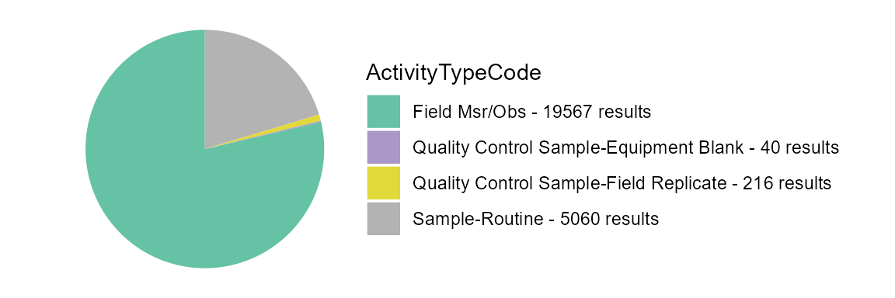
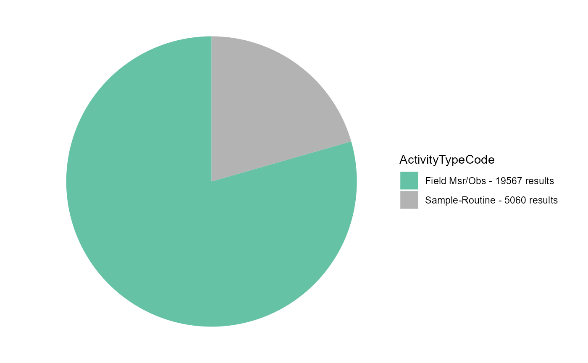
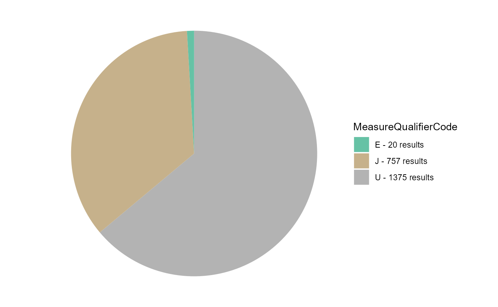
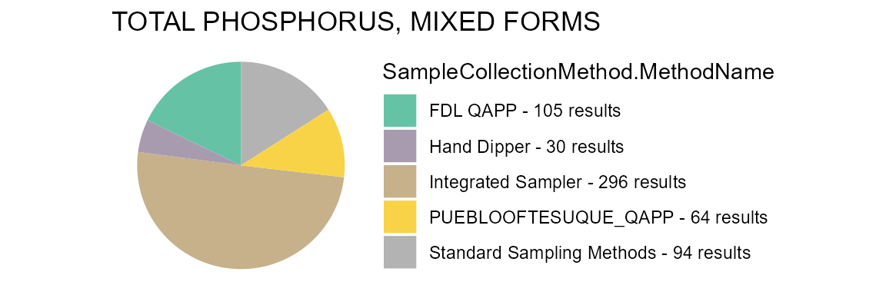

TADA Module 1: Water Quality Portal Data Discovery and Cleaning
TADA Team
2023-05-08
Source:vignettes/TADAModule1.Rmd
TADAModule1.RmdOverview
This vignette will walk through how to discover and clean (i.e., wrangle, Quality Assure and Quality Control (QAQC), and harmonize) Water Quality Portal (WQP) data from multiple organizations.
Install and load packages
To install TADA, currently you need to install from GitHub using remotes (shown) or devtools.
First, install and load the “remotes” package specifying the repo. This is needed before installing TADA because it is only available on GitHub (not CRAN).
install.packages("remotes",
repos = "http://cran.us.r-project.org")
library(remotes)Next, install and load TADA. dataRetrieval and other TADA R Package dependencies will also be downloaded from CRAN with the TADA install, but the development version can be downloaded directly from GitHub if desired (un-comment).
# remotes::install_github("USGS-R/dataRetrieval", dependencies=TRUE)
# if you experience any issues installing TADA, try un-commenting and running
# the line below before the install
# options(download.file.method = "wininet")
remotes::install_github("USEPA/TADA",
ref = "histogram_kh",
dependencies = TRUE)
library(TADA)Retrieve WQP data
WQP data is retrieved and processed for compatibility with TADA. This function, TADAdataRetrieval, builds on the USGS dataRetrieval package functions. It joins four WQP profiles (i.e., Site metadata, Sample Results (narrow), Sample Results (physical/chemical metadata), and Project metadata. In addition, it changes all data in the Characteristic, Speciation, Fraction, and Unit fields to uppercase, removes true duplicates, and addressed result values that include special characters.
This function uses the same inputs as the dataRetrieval
readWQPdata function. readWQPdata does not
restrict the characteristics pulled from Water Quality Portal (WQP).
You may specify the desired characteristics by using, for instance:
characteristicName = “pH”.
Data retrieval filters include:
startDate
endDate
characteristicName
sampleMedia
siteType
statecode (review list of possible state and territory abbreviations)
countycode
siteid
organization
project
huc
characteristicType
Please be aware that the default TADAdataRetrieval function automatically runs the TADA autoclean and ConvertSpecialChars functions. Both are both required for subsequent functions within the TADA R package to run. As a general rule, TADA functions do not change any contents in the WQP-served columns (enter ?ConvertSpecialChars and ?autoclean into the console for more details). Instead, they add new columns with the prefix “TADA.” The following columns are numeric versions of their WQP origins:
- TADA.ResultMeasureValue
- TADA.DetectionQuantitationLimitMeasure.MeasureValue
- TADA.LatitudeMeasure
- TADA.LongitudeMeasureThese functions also add the columns TADA.ResultMeasureValueDataTypes.Flag and TADA.DetectionQuantitationLimitMeasure.MeasureValueDataTypes.Flag, which provide information about the result values that is needed to address censored data later on (i.e., nondetections). Specifically, these new columns flag if special characters are included in result values, and specifies what the special characters are.
Downloads using TADAdataRetrieval will have the same columns each time, but be aware that data are uploaded to the Water Quality Portal by individual organizations, which may or may not follow the same conventions. Data and metadata quality are not guaranteed! Make sure to carefully explore any data and make conservative quality assurance decisions where information is limited.
Tips:
-
All the query filters for the WQP work as an AND but within the fields there are ORs. For example:
Characteristics: If you choose pH & DO - it’s an OR. This means you will retrieve both pH OR DO data if available.
States: Similarly, if you choose VA and IL, it’s an OR. This means you will retrieve both VA OR IL data if available.
Combinations of fields are ANDs, such as State/VA AND Characteristic/DO”. This means you will receive all DO data available in VA.
“Characteristic” and “Characteristic Type” also work as an AND. This means that the Characteristic must fall within the CharacteristicGroup if both filters are being used, if not you will get an error.
The “siteid” is a general term WQP uses to describe both Site IDs from USGS databases and Monitoring Location Identifiers (from the Water Quality Portal). Each monitoring location in the Water Quality Portal (WQP) has a unique Monitoring Location Identifier, regardless of the database from which it derives. The Monitoring Location Identifier from the WQP is the concatenated Organization Identifier plus the Site ID number. Site IDs that only include a number are only unique identifiers for monitoring locations within USGS NWIS or EPA’s WQX databases separately.
Additional resources:
Review function documentation by entering the following code into the console: ?TADAdataRetrieval
dataRetrieval
Uncomment below if you would like to review differences between the profiles you would get using readWQPdata vs. TADAdataRetrieval. The profiles are different because TADAdataRetrieval automatically joins in data from multiple WQP profiles, and does some additional data cleaning as part of the data retrieval process.
This example includes monitoring data collected from Jan 2018 to Jan 2019 by six organizations: 1) Red Lake Band of Chippewa Indians, 2) Sac & Fox Nation, 3) Pueblo of Pojoaque, 4) Minnesota Chippewa Tribe (Fond du Lac Band), 5) Pueblo of Tesuque, and 6) The Chickasaw Nation
We will move forward with this example in the remainder of the vignette.
# dataRetrieval_example <- dataRetrieval::readWQPdata(organization = c("REDLAKE_WQX", "SFNOES_WQX", "PUEBLO_POJOAQUE", "FONDULAC_WQX", "PUEBLOOFTESUQUE", "CNENVSER"), startDate = "2018-01-01", endDate = "2019-01-01", ignore_attributes = TRUE)Use the code below to download data from the WQP using TADAdataRetrieval. Edit the code chuck below to define your own WQP query inputs.
Note: TADAdataRetrieval (by leveraging dataRetrieval), automatically converts the date times to UTC. It also automatically converts the data to dates, datetimes, and numerics based on a standard algorithm.
Enter ?TADAdataRetrieval into the console to review more example queries and additional information.
TADAProfile <- TADAdataRetrieval(organization = c("REDLAKE_WQX", "SFNOES_WQX", "PUEBLO_POJOAQUE", "FONDULAC_WQX", "PUEBLOOFTESUQUE", "CNENVSER"), startDate = "2018-01-01", endDate = "2019-01-01")
#> [1] "NOTE: This version of the TADA package is designed to work with data with sample media: 'WATER'. autoclean does not currently filter downloaded data to 'WATER'. The user must make this specification on their own outside of package functions. See the WQPDataHamornization vignette for an example."If you need to download a large amount of data from across a large area, and the TADAdataRetrieval function is not working due to WQP timeout issues, then the TADABigdataRetrieval function may work better.
This function does multiple synchronous data calls to the WQP (waterqualitydata.us). It uses the WQP summary service to limit the sites downloaded to only those with relevant data. It pulls back data from set number of stations at a time and then joins the data back together to produce a single TADA compatible dataframe as the output.
See ?TADABigdataRetrieval for more details. WARNING, some of the examples below can take multiple HOURS to run. The total run time depends on your query inputs.
# AK_AL_WaterTemp <- TADABigdataRetrieval(startDate = "2000-01-01", endDate = "2022-12-31", characteristicName = "Temperature, water", statecode = c("AK","AL"))
# AllWaterTemp <- TADABigdataRetrieval(characteristicName = "Temperature, water")
# AllPhosphorus <- TADABigdataRetrieval(characteristicName = "Phosphorus")
# AllCT <- TADABigdataRetrieval(statecode = "CT")Review all column names in the TADA Profile. Remove results that are not water samples or measurements (TADA is recommended for use with water data only).
colnames(TADAProfile)
#> [1] "OrganizationIdentifier"
#> [2] "OrganizationFormalName"
#> [3] "ActivityIdentifier"
#> [4] "ActivityTypeCode"
#> [5] "ActivityMediaName"
#> [6] "ActivityMediaSubdivisionName"
#> [7] "ActivityStartDate"
#> [8] "ActivityStartTime.Time"
#> [9] "ActivityStartTime.TimeZoneCode"
#> [10] "ActivityEndDate"
#> [11] "ActivityEndTime.Time"
#> [12] "ActivityEndTime.TimeZoneCode"
#> [13] "ActivityRelativeDepthName"
#> [14] "ActivityDepthHeightMeasure.MeasureValue"
#> [15] "ActivityDepthHeightMeasure.MeasureUnitCode"
#> [16] "ActivityDepthAltitudeReferencePointText"
#> [17] "ActivityTopDepthHeightMeasure.MeasureValue"
#> [18] "ActivityTopDepthHeightMeasure.MeasureUnitCode"
#> [19] "ActivityBottomDepthHeightMeasure.MeasureValue"
#> [20] "ActivityBottomDepthHeightMeasure.MeasureUnitCode"
#> [21] "ProjectIdentifier"
#> [22] "ProjectName"
#> [23] "ActivityConductingOrganizationText"
#> [24] "MonitoringLocationIdentifier"
#> [25] "MonitoringLocationName"
#> [26] "ActivityCommentText"
#> [27] "SampleAquifer"
#> [28] "HydrologicCondition"
#> [29] "HydrologicEvent"
#> [30] "ActivityLocation.LatitudeMeasure"
#> [31] "ActivityLocation.LongitudeMeasure"
#> [32] "SampleCollectionMethod.MethodIdentifier"
#> [33] "SampleCollectionMethod.MethodIdentifierContext"
#> [34] "SampleCollectionMethod.MethodName"
#> [35] "SampleCollectionMethod.MethodDescriptionText"
#> [36] "SampleCollectionEquipmentName"
#> [37] "ResultIdentifier"
#> [38] "ResultDetectionConditionText"
#> [39] "MethodSpeciationName"
#> [40] "CharacteristicName"
#> [41] "ResultSampleFractionText"
#> [42] "ResultMeasureValue"
#> [43] "ResultMeasure.MeasureUnitCode"
#> [44] "MeasureQualifierCode"
#> [45] "ResultStatusIdentifier"
#> [46] "StatisticalBaseCode"
#> [47] "ResultValueTypeName"
#> [48] "ResultWeightBasisText"
#> [49] "ResultTimeBasisText"
#> [50] "ResultTemperatureBasisText"
#> [51] "ResultParticleSizeBasisText"
#> [52] "DataQuality.PrecisionValue"
#> [53] "DataQuality.BiasValue"
#> [54] "DataQuality.ConfidenceIntervalValue"
#> [55] "DataQuality.UpperConfidenceLimitValue"
#> [56] "DataQuality.LowerConfidenceLimitValue"
#> [57] "ResultCommentText"
#> [58] "USGSPCode"
#> [59] "ResultDepthHeightMeasure.MeasureValue"
#> [60] "ResultDepthHeightMeasure.MeasureUnitCode"
#> [61] "ResultDepthAltitudeReferencePointText"
#> [62] "SubjectTaxonomicName"
#> [63] "SampleTissueAnatomyName"
#> [64] "BinaryObjectFileName"
#> [65] "BinaryObjectFileTypeCode"
#> [66] "ResultFileUrl"
#> [67] "ResultAnalyticalMethod.MethodIdentifier"
#> [68] "ResultAnalyticalMethod.MethodIdentifierContext"
#> [69] "ResultAnalyticalMethod.MethodName"
#> [70] "ResultAnalyticalMethod.MethodUrl"
#> [71] "ResultAnalyticalMethod.MethodDescriptionText"
#> [72] "LaboratoryName"
#> [73] "AnalysisStartDate"
#> [74] "ResultLaboratoryCommentText"
#> [75] "ResultDetectionQuantitationLimitUrl"
#> [76] "DetectionQuantitationLimitTypeName"
#> [77] "DetectionQuantitationLimitMeasure.MeasureValue"
#> [78] "DetectionQuantitationLimitMeasure.MeasureUnitCode"
#> [79] "LabSamplePreparationUrl"
#> [80] "LastUpdated"
#> [81] "ProviderName"
#> [82] "timeZoneStart"
#> [83] "timeZoneEnd"
#> [84] "ActivityStartDateTime"
#> [85] "ActivityEndDateTime"
#> [86] "MonitoringLocationTypeName"
#> [87] "MonitoringLocationDescriptionText"
#> [88] "HUCEightDigitCode"
#> [89] "DrainageAreaMeasure.MeasureValue"
#> [90] "DrainageAreaMeasure.MeasureUnitCode"
#> [91] "ContributingDrainageAreaMeasure.MeasureValue"
#> [92] "ContributingDrainageAreaMeasure.MeasureUnitCode"
#> [93] "LatitudeMeasure"
#> [94] "LongitudeMeasure"
#> [95] "SourceMapScaleNumeric"
#> [96] "HorizontalAccuracyMeasure.MeasureValue"
#> [97] "HorizontalAccuracyMeasure.MeasureUnitCode"
#> [98] "HorizontalCollectionMethodName"
#> [99] "HorizontalCoordinateReferenceSystemDatumName"
#> [100] "VerticalMeasure.MeasureValue"
#> [101] "VerticalMeasure.MeasureUnitCode"
#> [102] "VerticalAccuracyMeasure.MeasureValue"
#> [103] "VerticalAccuracyMeasure.MeasureUnitCode"
#> [104] "VerticalCollectionMethodName"
#> [105] "VerticalCoordinateReferenceSystemDatumName"
#> [106] "CountryCode"
#> [107] "StateCode"
#> [108] "CountyCode"
#> [109] "AquiferName"
#> [110] "LocalAqfrName"
#> [111] "FormationTypeText"
#> [112] "AquiferTypeName"
#> [113] "ConstructionDateText"
#> [114] "WellDepthMeasure.MeasureValue"
#> [115] "WellDepthMeasure.MeasureUnitCode"
#> [116] "WellHoleDepthMeasure.MeasureValue"
#> [117] "WellHoleDepthMeasure.MeasureUnitCode"
#> [118] "MethodSpecificationName"
#> [119] "ProjectDescriptionText"
#> [120] "SamplingDesignTypeCode"
#> [121] "QAPPApprovedIndicator"
#> [122] "QAPPApprovalAgencyName"
#> [123] "ProjectFileUrl"
#> [124] "ProjectMonitoringLocationWeightingUrl"
#> [125] "TADA.LatitudeMeasure"
#> [126] "TADA.LongitudeMeasure"
#> [127] "TADA.ActivityMediaName"
#> [128] "TADA.CharacteristicName"
#> [129] "TADA.ResultMeasureValue"
#> [130] "TADA.ResultMeasureValueDataTypes.Flag"
#> [131] "TADA.ResultMeasure.MeasureUnitCode"
#> [132] "TADA.MethodSpecificationName"
#> [133] "TADA.ResultSampleFractionText"
#> [134] "TADA.DetectionQuantitationLimitMeasure.MeasureValue"
#> [135] "TADA.DetectionQuantitationLimitMeasure.MeasureUnitCode"
#> [136] "TADA.DetectionQuantitationLimitMeasure.MeasureValueDataTypes.Flag"
TADAProfile_CharSummary <- TADA_summarizeColumn(TADAProfile, "TADA.CharacteristicName")
TADAProfile_CharSummary
#> # A tibble: 112 × 3
#> TADA.CharacteristicName n_sites n_records
#> <chr> <int> <int>
#> 1 .ALPHA.-ENDOSULFAN 6 7
#> 2 .BETA.-ENDOSULFAN 6 7
#> 3 ALDRIN 6 7
#> 4 ALKALINITY, TOTAL 128 692
#> 5 ALPHA PARTICLE 6 14
#> 6 ALUMINUM 6 7
#> 7 AMMONIA-NITROGEN 83 328
#> 8 AMMONIUM 16 93
#> 9 APPARENT COLOR 39 106
#> 10 ARSENIC 39 42
#> # ℹ 102 more rows
# Remove data for non-water media types
TADAProfile <- dplyr::filter(TADAProfile, TADA.ActivityMediaName == "WATER")Invalid coordinates
Review station locations and summary information using the TADAOverviewMap function. TADAOverviewMap counts the number of unique results, characteristics, and organizations at each monitoring location in the dataset and creates a tidy map for reviewing summary stats spatially. Larger point sizes indicate more results collected at a given site, while darker blue colors indicate more unique characteristics collected at the site. Users may click on a site to view a pop-up with this summary information, including the number of organizations that reported results at that site. This map may inform a user’s decision to remove/correct sites that are outside the US.
TADAOverviewMap(TADAProfile)The TADA InvalidCoordinates function identifies and flags potentially invalid coordinate data. While its functionality is showcased here, it is always important to review any invalid outputs before cleaning to reduce the risk of leaving out usable data/sites.
Allowable values for clean_outsideUSA are “no”, “remove”, or “change sign”. The default is “no” which flags latitude and longitude coordinates outside the USA. Assigning clean_ousideUSA = “remove” will remove rows of data with coordinates outside the USA. And assigning clean_outsideUSA = “change sign” will flip the sign of latitude or longitude coordinates flagged as outside the USA. The “change sign” option should only be used when it is known that coordinates were entered with the wrong sign in WQX; additionally, the data owner should fix these incorrect coordinates in the raw data through the WQX - for assistance email the WQX help desk: WQX@epa.gov
Allowable values for clean_imprecise are TRUE or FALSE. The default is FALSE which flags rows of data with invalid or imprecise coordinates without removing them. Assigning clean_imprecise = TRUE will remove rows of data with invalid or imprecise coordinates.
Allowable values for errorsonly are TRUE or FALSE. The default is FALSE which keeps all rows of data regardless of flag status. Assigning errorsonly = TRUE filters the dataframe to show only rows of data which are flagged.
When clean_outsideUSA = “no” and/or clean_imprecise = FALSE, a column will be appended titled “TADA.InvalidCoordinates.Flag” with the following flags (if relevant to dataframe):
If the latitude is less than zero, the row will be flagged with “LAT_OutsideUSA”. (Exception for American Samoa)
If the longitude is greater than zero AND less than 145, the row will be flagged as “LONG_OutsideUSA”. (Exceptions for Guam and the Northern Mariana Islands)
If the latitude or longitude contains the string, “999”, the row will be flagged as invalid.
Finally, precision can be measured by the number of decimal places in the latitude and longitude provided. If either does not have any numbers to the right of the decimal point, the row will be flagged as “Imprecise”.
# flag only
TADAProfileClean1 <- InvalidCoordinates(TADAProfile, clean_outsideUSA = "no", clean_imprecise = FALSE, errorsonly = FALSE)
# review unique flags in TADAProfileClean1
unique(TADAProfileClean1$TADA.InvalidCoordinates.Flag)
#> [1] "OK" "Imprecise_Longincludes999"
#> [3] "Imprecise_lessthan3decimaldigits"
# review unique MonitoringLocationIdentifiers in your flag dataframe
unique(TADAProfileClean1$MonitoringLocationIdentifier)
#> [1] "SFNOES_WQX-Veteran's Lake 003" "SFNOES_WQX-Veteran's Lake"
#> [3] "SFNOES_WQX-Veteran's Lake 005" "SFNOES_WQX-Veteran's Lake 002"
#> [5] "SFNOES_WQX-Veteran's Lake 004" "SFNOES_WQX-Rock Creek 001"
#> [7] "SFNOES_WQX-Deer Creek 001" "SFNOES_WQX-Shan Creek 001"
#> [9] "SFNOES_WQX-North Canadian River" "SFNOES_WQX-North Canadian 003"
#> [11] "SFNOES_WQX-North Canadian 002" "SFNOES_WQX-Wildhorse Creek"
#> [13] "REDLAKE_WQX-BORD" "REDLAKE_WQX-BLAC-H"
#> [15] "REDLAKE_WQX-GREE-REDLAKE" "REDLAKE_WQX-10RD014"
#> [17] "REDLAKE_WQX-09RD003" "REDLAKE_WQX-LRE-C"
#> [19] "REDLAKE_WQX-CHAI-S" "REDLAKE_WQX-URW"
#> [21] "REDLAKE_WQX-JOHN" "REDLAKE_WQX-CHAI-M"
#> [23] "REDLAKE_WQX-MORR" "REDLAKE_WQX-PINE-I"
#> [25] "REDLAKE_WQX-LONG" "REDLAKE_WQX-LRE"
#> [27] "REDLAKE_WQX-DICK" "REDLAKE_WQX-MUDR-M"
#> [29] "REDLAKE_WQX-KINN" "REDLAKE_WQX-JOUR"
#> [31] "REDLAKE_WQX-BALI" "REDLAKE_WQX-LRC"
#> [33] "REDLAKE_WQX-URW-C" "REDLAKE_WQX-URC"
#> [35] "REDLAKE_WQX-BATT-I" "REDLAKE_WQX-SHEL"
#> [37] "REDLAKE_WQX-BASS-SE" "REDLAKE_WQX-SQUA"
#> [39] "REDLAKE_WQX-BASS-NW" "REDLAKE_WQX-S002-123"
#> [41] "REDLAKE_WQX-LRW-C" "REDLAKE_WQX-URE-C"
#> [43] "REDLAKE_WQX-FULL-W" "REDLAKE_WQX-SHEM"
#> [45] "REDLAKE_WQX-MUER" "REDLAKE_WQX-PIKE-I"
#> [47] "REDLAKE_WQX-URE" "REDLAKE_WQX-TOWN"
#> [49] "REDLAKE_WQX-LRW" "REDLAKE_WQX-BATT-SB"
#> [51] "REDLAKE_WQX-PIKE-OR" "REDLAKE_WQX-ROCK-O"
#> [53] "REDLAKE_WQX-BIGT" "REDLAKE_WQX-GREE-REDBY"
#> [55] "REDLAKE_WQX-BATT-NB" "REDLAKE_WQX-ANKE"
#> [57] "REDLAKE_WQX-FULL-E" "REDLAKE_WQX-SANR-U"
#> [59] "REDLAKE_WQX-10RD011" "REDLAKE_WQX-ROUN"
#> [61] "REDLAKE_WQX-HARR-I" "REDLAKE_WQX-EMER"
#> [63] "REDLAKE_WQX-HEAR" "REDLAKE_WQX-TAMA-B"
#> [65] "REDLAKE_WQX-NONA" "REDLAKE_WQX-REDL-O"
#> [67] "REDLAKE_WQX-ELEP" "REDLAKE_WQX-LUSS"
#> [69] "REDLAKE_WQX-BLAC-I" "REDLAKE_WQX-SAND"
#> [71] "REDLAKE_WQX-CLWR-B" "REDLAKE_WQX-MUDR-I"
#> [73] "REDLAKE_WQX-LITT" "REDLAKE_WQX-ISLA"
#> [75] "REDLAKE_WQX-PIKE-B" "REDLAKE_WQX-CORM-B"
#> [77] "REDLAKE_WQX-BIGT-BAY" "REDLAKE_WQX-GROU"
#> [79] "REDLAKE_WQX-CAHI" "REDLAKE_WQX-FLOW-2"
#> [81] "REDLAKE_WQX-BUFF-BAY" "REDLAKE_WQX-STON-I"
#> [83] "REDLAKE_WQX-REDH" "REDLAKE_WQX-S007-884"
#> [85] "REDLAKE_WQX-POPL-I" "REDLAKE_WQX-FLOW-4"
#> [87] "REDLAKE_WQX-TEAL" "REDLAKE_WQX-BEAR-I"
#> [89] "REDLAKE_WQX-PICK-I" "FONDULAC_WQX-123B"
#> [91] "CNENVSER-LS99" "PUEBLOOFTESUQUE-MS06VG"
#> [93] "PUEBLOOFTESUQUE-MS05TB" "PUEBLOOFTESUQUE-MS02SB"
#> [95] "FONDULAC_WQX-101" "CNENVSER-RC40"
#> [97] "PUEBLOOFTESUQUE-MS04NP" "FONDULAC_WQX-110"
#> [99] "CNENVSER-BC99" "PUEBLOOFTESUQUE-MS03ID"
#> [101] "REDLAKE_WQX-COLO" "CNENVSER-LSCC"
#> [103] "CNENVSER-BRHB" "PUEBLOOFTESUQUE-MS01AD"
#> [105] "CNENVSER-LSER" "PUEBLOOFTESUQUE-MS08RC"
#> [107] "CNENVSER-Lake" "FONDULAC_WQX-SLRM 53"
#> [109] "REDLAKE_WQX-WILL" "FONDULAC_WQX-108"
#> [111] "FONDULAC_WQX-102A" "CNENVSER-LSHT"
#> [113] "CNENVSER-Deleware" "FONDULAC_WQX-SLRM 46.5"
#> [115] "FONDULAC_WQX-109" "FONDULAC_WQX-124"
#> [117] "PUEBLO_POJOAQUE-PR" "FONDULAC_WQX-102B"
#> [119] "FONDULAC_WQX-SLRM 51" "FONDULAC_WQX-116"
#> [121] "FONDULAC_WQX-119" "FONDULAC_WQX-207B"
#> [123] "FONDULAC_WQX-205" "FONDULAC_WQX-113"
#> [125] "PUEBLOOFTESUQUE-MS07AR" "REDLAKE_WQX-SHAC"
#> [127] "FONDULAC_WQX-121" "CNENVSER-LSHQ"
#> [129] "CNENVSER-PENN" "FONDULAC_WQX-123A"
#> [131] "CNENVSER-RCOK" "FONDULAC_WQX-112"
#> [133] "FONDULAC_WQX-115" "CNENVSER-BR99"
#> [135] "CNENVSER-HONEY" "CNENVSER-LSFR"
#> [137] "FONDULAC_WQX-111" "FONDULAC_WQX-114B"
#> [139] "FONDULAC_WQX-114A" "FONDULAC_WQX-118"
#> [141] "FONDULAC_WQX-204A" "FONDULAC_WQX-104"
#> [143] "FONDULAC_WQX-122" "FONDULAC_WQX-SLRM 38.5"
#> [145] "FONDULAC_WQX-203A" "REDLAKE_WQX-GIBI"
#> [147] "CNENVSER-RUSH" "REDLAKE_WQX-GOUR"
#> [149] "FONDULAC_WQX-202B" "FONDULAC_WQX-SLRM 40.5"
#> [151] "FONDULAC_WQX-122E" "PUEBLO_POJOAQUE-TR"
#> [153] "PUEBLO_POJOAQUE-NR" "FONDULAC_WQX-122Q"
#> [155] "FONDULAC_WQX-105" "FONDULAC_WQX-122G"
#> [157] "FONDULAC_WQX-103" "FONDULAC_WQX-106"
#> [159] "FONDULAC_WQX-122J" "FONDULAC_WQX-122F"
Unique_InvalidCoordinateFlags <- TADAProfileClean1 %>%
dplyr::select('MonitoringLocationIdentifier',
'MonitoringLocationName',
'TADA.InvalidCoordinates.Flag',
'OrganizationIdentifier',
'TADA.LongitudeMeasure',
'TADA.LatitudeMeasure',
'MonitoringLocationTypeName',
'CountryCode',
'StateCode',
'CountyCode',
'HUCEightDigitCode',
'MonitoringLocationDescriptionText',
'ProjectName',
'ProjectIdentifier',
'OrganizationFormalName') %>%
dplyr::distinct()
Unique_InvalidCoordinateFlags
#> MonitoringLocationIdentifier
#> 1 SFNOES_WQX-Veteran's Lake 003
#> 2 SFNOES_WQX-Veteran's Lake
#> 3 SFNOES_WQX-Veteran's Lake 005
#> 4 SFNOES_WQX-Veteran's Lake 002
#> 5 SFNOES_WQX-Veteran's Lake 004
#> 6 SFNOES_WQX-Rock Creek 001
#> 7 SFNOES_WQX-Deer Creek 001
#> 8 SFNOES_WQX-Shan Creek 001
#> 9 SFNOES_WQX-North Canadian River
#> 10 SFNOES_WQX-North Canadian 003
#> 11 SFNOES_WQX-North Canadian 002
#> 12 SFNOES_WQX-Wildhorse Creek
#> 13 REDLAKE_WQX-BORD
#> 14 REDLAKE_WQX-BLAC-H
#> 15 REDLAKE_WQX-GREE-REDLAKE
#> 16 REDLAKE_WQX-10RD014
#> 17 REDLAKE_WQX-09RD003
#> 18 REDLAKE_WQX-LRE-C
#> 19 REDLAKE_WQX-CHAI-S
#> 20 REDLAKE_WQX-URW
#> 21 REDLAKE_WQX-JOHN
#> 22 REDLAKE_WQX-CHAI-M
#> 23 REDLAKE_WQX-MORR
#> 24 REDLAKE_WQX-PINE-I
#> 25 REDLAKE_WQX-LONG
#> 26 REDLAKE_WQX-LRE
#> 27 REDLAKE_WQX-DICK
#> 28 REDLAKE_WQX-MUDR-M
#> 29 REDLAKE_WQX-KINN
#> 30 REDLAKE_WQX-JOUR
#> 31 REDLAKE_WQX-BALI
#> 32 REDLAKE_WQX-LRC
#> 33 REDLAKE_WQX-URW-C
#> 34 REDLAKE_WQX-URC
#> 35 REDLAKE_WQX-BATT-I
#> 36 REDLAKE_WQX-SHEL
#> 37 REDLAKE_WQX-BASS-SE
#> 38 REDLAKE_WQX-SQUA
#> 39 REDLAKE_WQX-BASS-NW
#> 40 REDLAKE_WQX-S002-123
#> 41 REDLAKE_WQX-LRW-C
#> 42 REDLAKE_WQX-URE-C
#> 43 REDLAKE_WQX-FULL-W
#> 44 REDLAKE_WQX-SHEM
#> 45 REDLAKE_WQX-S002-123
#> 46 REDLAKE_WQX-MUER
#> 47 REDLAKE_WQX-PIKE-I
#> 48 REDLAKE_WQX-URE
#> 49 REDLAKE_WQX-TOWN
#> 50 REDLAKE_WQX-LRW
#> 51 REDLAKE_WQX-BATT-SB
#> 52 REDLAKE_WQX-PIKE-OR
#> 53 REDLAKE_WQX-ROCK-O
#> 54 REDLAKE_WQX-BIGT
#> 55 REDLAKE_WQX-GREE-REDBY
#> 56 REDLAKE_WQX-BATT-NB
#> 57 REDLAKE_WQX-SQUA
#> 58 REDLAKE_WQX-ANKE
#> 59 REDLAKE_WQX-FULL-E
#> 60 REDLAKE_WQX-SANR-U
#> 61 REDLAKE_WQX-10RD011
#> 62 REDLAKE_WQX-ROUN
#> 63 REDLAKE_WQX-HARR-I
#> 64 REDLAKE_WQX-EMER
#> 65 REDLAKE_WQX-HEAR
#> 66 REDLAKE_WQX-TAMA-B
#> 67 REDLAKE_WQX-NONA
#> 68 REDLAKE_WQX-REDL-O
#> 69 REDLAKE_WQX-ELEP
#> 70 REDLAKE_WQX-LUSS
#> 71 REDLAKE_WQX-BLAC-I
#> 72 REDLAKE_WQX-SAND
#> 73 REDLAKE_WQX-SANR-U
#> 74 REDLAKE_WQX-CLWR-B
#> 75 REDLAKE_WQX-10RD014
#> 76 REDLAKE_WQX-MUDR-I
#> 77 REDLAKE_WQX-LITT
#> 78 REDLAKE_WQX-MUDR-M
#> 79 REDLAKE_WQX-ISLA
#> 80 REDLAKE_WQX-PIKE-B
#> 81 REDLAKE_WQX-CORM-B
#> 82 REDLAKE_WQX-CORM-B
#> 83 REDLAKE_WQX-MUDR-I
#> 84 REDLAKE_WQX-BIGT-BAY
#> 85 REDLAKE_WQX-CHAI-M
#> 86 REDLAKE_WQX-GROU
#> 87 REDLAKE_WQX-CAHI
#> 88 REDLAKE_WQX-ANKE
#> 89 REDLAKE_WQX-FLOW-2
#> 90 REDLAKE_WQX-BUFF-BAY
#> 91 REDLAKE_WQX-CHAI-S
#> 92 REDLAKE_WQX-CLWR-B
#> 93 REDLAKE_WQX-STON-I
#> 94 REDLAKE_WQX-BATT-I
#> 95 REDLAKE_WQX-PIKE-I
#> 96 REDLAKE_WQX-BASS-SE
#> 97 REDLAKE_WQX-GREE-REDLAKE
#> 98 REDLAKE_WQX-FULL-W
#> 99 REDLAKE_WQX-BORD
#> 100 REDLAKE_WQX-REDH
#> 101 REDLAKE_WQX-S007-884
#> 102 REDLAKE_WQX-NONA
#> 103 REDLAKE_WQX-TAMA-B
#> 104 REDLAKE_WQX-09RD003
#> 105 REDLAKE_WQX-POPL-I
#> 106 REDLAKE_WQX-FLOW-4
#> 107 REDLAKE_WQX-TEAL
#> 108 REDLAKE_WQX-PIKE-OR
#> 109 REDLAKE_WQX-GREE-REDBY
#> 110 REDLAKE_WQX-LITT
#> 111 REDLAKE_WQX-BEAR-I
#> 112 REDLAKE_WQX-FLOW-4
#> 113 REDLAKE_WQX-REDL-O
#> 114 REDLAKE_WQX-PICK-I
#> 115 REDLAKE_WQX-SHEM
#> 116 REDLAKE_WQX-MORR
#> 117 REDLAKE_WQX-FLOW-2
#> 118 REDLAKE_WQX-JOUR
#> 119 REDLAKE_WQX-HEAR
#> 120 REDLAKE_WQX-KINN
#> 121 REDLAKE_WQX-BIGT
#> 122 REDLAKE_WQX-ELEP
#> 123 REDLAKE_WQX-PIKE-B
#> 124 REDLAKE_WQX-BLAC-H
#> 125 REDLAKE_WQX-LUSS
#> 126 REDLAKE_WQX-FULL-E
#> 127 REDLAKE_WQX-ROCK-O
#> 128 REDLAKE_WQX-BALI
#> 129 REDLAKE_WQX-ROUN
#> 130 REDLAKE_WQX-BASS-NW
#> 131 REDLAKE_WQX-BLAC-I
#> 132 REDLAKE_WQX-SHEL
#> 133 REDLAKE_WQX-LONG
#> 134 REDLAKE_WQX-BATT-SB
#> 135 REDLAKE_WQX-DICK
#> 136 REDLAKE_WQX-BATT-NB
#> 137 REDLAKE_WQX-EMER
#> 138 REDLAKE_WQX-TOWN
#> 139 FONDULAC_WQX-123B
#> 140 CNENVSER-LS99
#> 141 PUEBLOOFTESUQUE-MS06VG
#> 142 REDLAKE_WQX-ISLA
#> 143 PUEBLOOFTESUQUE-MS05TB
#> 144 PUEBLOOFTESUQUE-MS02SB
#> 145 FONDULAC_WQX-101
#> 146 REDLAKE_WQX-JOHN
#> 147 CNENVSER-RC40
#> 148 PUEBLOOFTESUQUE-MS04NP
#> 149 FONDULAC_WQX-110
#> 150 CNENVSER-BC99
#> 151 PUEBLOOFTESUQUE-MS03ID
#> 152 REDLAKE_WQX-COLO
#> 153 REDLAKE_WQX-SAND
#> 154 CNENVSER-LSCC
#> 155 CNENVSER-BRHB
#> 156 PUEBLOOFTESUQUE-MS01AD
#> 157 CNENVSER-LSER
#> 158 PUEBLOOFTESUQUE-MS08RC
#> 159 CNENVSER-Lake
#> 160 FONDULAC_WQX-SLRM 53
#> 161 REDLAKE_WQX-WILL
#> 162 FONDULAC_WQX-108
#> 163 FONDULAC_WQX-102A
#> 164 CNENVSER-LSHT
#> 165 CNENVSER-Deleware
#> 166 FONDULAC_WQX-SLRM 46.5
#> 167 FONDULAC_WQX-109
#> 168 FONDULAC_WQX-124
#> 169 PUEBLO_POJOAQUE-PR
#> 170 FONDULAC_WQX-102B
#> 171 FONDULAC_WQX-SLRM 51
#> 172 FONDULAC_WQX-116
#> 173 FONDULAC_WQX-119
#> 174 FONDULAC_WQX-207B
#> 175 FONDULAC_WQX-205
#> 176 FONDULAC_WQX-113
#> 177 PUEBLOOFTESUQUE-MS07AR
#> 178 REDLAKE_WQX-SHAC
#> 179 FONDULAC_WQX-121
#> 180 CNENVSER-LSHQ
#> 181 CNENVSER-PENN
#> 182 FONDULAC_WQX-123A
#> 183 CNENVSER-RCOK
#> 184 FONDULAC_WQX-112
#> 185 FONDULAC_WQX-115
#> 186 CNENVSER-BR99
#> 187 CNENVSER-HONEY
#> 188 CNENVSER-LSFR
#> 189 FONDULAC_WQX-111
#> 190 FONDULAC_WQX-114B
#> 191 FONDULAC_WQX-114A
#> 192 FONDULAC_WQX-118
#> 193 FONDULAC_WQX-204A
#> 194 FONDULAC_WQX-104
#> 195 FONDULAC_WQX-122
#> 196 FONDULAC_WQX-SLRM 38.5
#> 197 FONDULAC_WQX-203A
#> 198 REDLAKE_WQX-GIBI
#> 199 CNENVSER-RUSH
#> 200 REDLAKE_WQX-GOUR
#> 201 FONDULAC_WQX-202B
#> 202 FONDULAC_WQX-SLRM 40.5
#> 203 FONDULAC_WQX-122E
#> 204 PUEBLO_POJOAQUE-TR
#> 205 PUEBLO_POJOAQUE-NR
#> 206 PUEBLO_POJOAQUE-TR
#> 207 FONDULAC_WQX-122Q
#> 208 FONDULAC_WQX-105
#> 209 FONDULAC_WQX-122G
#> 210 FONDULAC_WQX-103
#> 211 FONDULAC_WQX-106
#> 212 FONDULAC_WQX-122J
#> 213 PUEBLO_POJOAQUE-NR
#> 214 PUEBLO_POJOAQUE-PR
#> 215 FONDULAC_WQX-122F
#> MonitoringLocationName
#> 1 Veteran's Lake 003
#> 2 Veteran's Lake
#> 3 Veteran's Lake 005
#> 4 Veteran's Lake 002
#> 5 Veteran's Lake 004
#> 6 Rock Creek 001
#> 7 Deer Creek 001
#> 8 Shan Creek 001
#> 9 North Canadian River
#> 10 North Canadian 003
#> 11 North Canadian 002
#> 12 Wildhorse Creek
#> 13 Border Lake
#> 14 Blackduck River at Hwy 1 Bridge
#> 15 Green Lake (Red Lake)
#> 16 Mud River at MUDR-M
#> 17 Sandy River at Gonvick Truck Trail
#> 18 Lower Red Lake : East Central
#> 19 Chain: South Lake
#> 20 Upper Red Lake: West
#> 21 Johnson Lake
#> 22 Chain: Middle Lake
#> 23 Morrison Lake
#> 24 Pine Creek Inlet
#> 25 Long Lake (Burt)
#> 26 Lower Red Lake : East
#> 27 Dickens Lake
#> 28 Mud River Middle
#> 29 Kinney Lake
#> 30 Jourdain Lake
#> 31 Balif Lake
#> 32 Lower Red Lake : Central
#> 33 Upper Red Lake: West-Central
#> 34 Upper Red Lake: Central
#> 35 Battle River Inlet
#> 36 Shell Lake
#> 37 Bass Lake: Southeast Basin
#> 38 Squaw Smith Lake
#> 39 Bass Lake: Northwest Basin
#> 40 Red Lake River at Lower Red Lake Outlet Dam
#> 41 Lower Red Lake: West Central
#> 42 Upper Red Lake: East Central
#> 43 Fullers Lake: West Basin
#> 44 Shemahgun Lake
#> 45 Red Lake River at Lower Red Lake Outlet Dam
#> 46 Muerlin Lake
#> 47 Pike Creek Inlet
#> 48 Upper Red Lake: East
#> 49 Townline Lake
#> 50 Lower Red Lake : West
#> 51 Battle River South Branch
#> 52 Pike Creek Off Reservation
#> 53 Red Lake River at Rock Dam
#> 54 Big Thunder Lake
#> 55 Green Lake (Redby)
#> 56 Battle River North Branch
#> 57 Squaw Smith Lake
#> 58 Ankeewinsee Lake
#> 59 Fullers Lake: East Basin
#> 60 Sandy River Upstream
#> 61 Hay Creek on Ponemah Rd
#> 62 Round Lake (Sylvia)
#> 63 Harrison Creek Inlet
#> 64 Emerald Lake
#> 65 Heart Lake
#> 66 Tamarac River at Steel Bridge
#> 67 No-Name Lake
#> 68 Red Lake River at Outlet
#> 69 Elephant Ear Lake
#> 70 Lussier Lake
#> 71 Blackduck River Inlet
#> 72 Sandy Lake
#> 73 Sandy River Upstream
#> 74 Clearwater River at Boundary
#> 75 Mud River at MUDR-M
#> 76 Mud River Inlet
#> 77 Little Thunder Lake
#> 78 Mud River Middle
#> 79 Island Lake
#> 80 Pike Creek at South Boundary
#> 81 Cormorant River at Hwy 23 Culverts
#> 82 Cormorant River at Hwy 23 Culverts
#> 83 Mud River Inlet
#> 84 Big Traverse Bay
#> 85 Chain: Middle Lake
#> 86 Grouse Lake
#> 87 Cahill Lake
#> 88 Ankeewinsee Lake
#> 89 Flowing Well 2 on Hwy 1
#> 90 Buffalo Bay
#> 91 Chain: South Lake
#> 92 Clearwater River at Boundary
#> 93 Stony Creek Inlet
#> 94 Battle River Inlet
#> 95 Pike Creek Inlet
#> 96 Bass Lake: Southeast Basin
#> 97 Green Lake (Red Lake)
#> 98 Fullers Lake: West Basin
#> 99 Border Lake
#> 100 Redhead Lake
#> 101 S007-884 SHOTLEY BK AT CSAH-23
#> 102 No-Name Lake
#> 103 Tamarac River at Steel Bridge
#> 104 Sandy River at Gonvick Truck Trail
#> 105 Poplar Creek Inlet
#> 106 Flowing Well 4 on Old Nebish Road
#> 107 Teal Lake
#> 108 Pike Creek Off Reservation
#> 109 Green Lake (Redby)
#> 110 Little Thunder Lake
#> 111 Bear Creek Inlet
#> 112 Flowing Well 4 on Old Nebish Road
#> 113 Red Lake River at Outlet
#> 114 Pickerel Creek Inlet
#> 115 Shemahgun Lake
#> 116 Morrison Lake
#> 117 Flowing Well 2 on Hwy 1
#> 118 Jourdain Lake
#> 119 Heart Lake
#> 120 Kinney Lake
#> 121 Big Thunder Lake
#> 122 Elephant Ear Lake
#> 123 Pike Creek at South Boundary
#> 124 Blackduck River at Hwy 1 Bridge
#> 125 Lussier Lake
#> 126 Fullers Lake: East Basin
#> 127 Red Lake River at Rock Dam
#> 128 Balif Lake
#> 129 Round Lake (Sylvia)
#> 130 Bass Lake: Northwest Basin
#> 131 Blackduck River Inlet
#> 132 Shell Lake
#> 133 Long Lake (Burt)
#> 134 Battle River South Branch
#> 135 Dickens Lake
#> 136 Battle River North Branch
#> 137 Emerald Lake
#> 138 Townline Lake
#> 139 West Twin Lake (South Basin)
#> 140 Little Sandy Highway 99
#> 141 Vigil Grant
#> 142 Island Lake
#> 143 Tesuque Pueblo Bridge
#> 144 South Boundary
#> 145 Bang (Long) Lake
#> 146 Johnson Lake
#> 147 Rock Creek 40 ft
#> 148 Navajo Pond
#> 149 Lost Lake
#> 150 Boggy Creek Highway 99
#> 151 Infiltration Diversion/Upper Ponds
#> 152 Colombo Lake
#> 153 Sandy Lake
#> 154 Little Sandy Country Club
#> 155 Blue River Hughes Bridge
#> 156 USGS Guaging station Above Diversions/USFS Boundary
#> 157 Little Sandy Egypt Rd.
#> 158 Rio Chupadero
#> 159 Lake Creek Clear Boggy Water Shed
#> 160 SLRM 53
#> 161 Williams Lake
#> 162 Jaskari Lake
#> 163 Big Lake (North Basin)
#> 164 Little Sandy Horse Track
#> 165 Deleware Creek Clear Boggy Water Shed
#> 166 SLRM 46.5
#> 167 Lac Lake
#> 168 Wild Rice Lake
#> 169 Pojoaque River
#> 170 Big Lake (South Basin)
#> 171 SLRM 51
#> 172 Second Lake
#> 173 Sofie Lake
#> 174 Stoney Brook Station 2
#> 175 Simian Creek Station 1
#> 176 Pat Martin Lake
#> 177 Aspen Ranch
#> 178 Shackle Lake
#> 179 Spruce (Spirit) Lake
#> 180 Little Sandy Head Quarters
#> 181 Pennington Creek
#> 182 West Twin Lake (North Basin)
#> 183 Rock Creek Oklahoma St.
#> 184 Miller (Mud) Lake
#> 185 Rice Portage Lake
#> 186 Blue River Highway 99
#> 187 Honey Creek
#> 188 Little Sandy Fulkerson Rd.
#> 189 Joe Martin Lake
#> 190 Perch Lake (South Basin)
#> 191 Perch Lake (North Basin)
#> 192 Simian Lake
#> 193 Otter Creek (Station 1)
#> 194 Deadfish Lake
#> 195 Third Lake
#> 196 SLRM 38.5
#> 197 Martin Branch (Marshall Rd.)
#> 198 Gibibwisher Lake
#> 199 Rush Creek
#> 200 Gourd Lake
#> 201 Fond du Lac Creek Station 2
#> 202 SLRM 40.5
#> 203 THIRD LAKE (13')
#> 204 Tesuque River
#> 205 Nambe River
#> 206 Tesuque River
#> 207 Third Lake (14')
#> 208 East Twin Lake
#> 209 THIRD LAKE (17')
#> 210 Cedar Lake
#> 211 First Lake
#> 212 THIRD LAKE (19')
#> 213 Nambe River
#> 214 Pojoaque River
#> 215 THIRD LAKE (16')
#> TADA.InvalidCoordinates.Flag OrganizationIdentifier
#> 1 OK SFNOES_WQX
#> 2 OK SFNOES_WQX
#> 3 OK SFNOES_WQX
#> 4 OK SFNOES_WQX
#> 5 OK SFNOES_WQX
#> 6 OK SFNOES_WQX
#> 7 OK SFNOES_WQX
#> 8 OK SFNOES_WQX
#> 9 OK SFNOES_WQX
#> 10 OK SFNOES_WQX
#> 11 OK SFNOES_WQX
#> 12 OK SFNOES_WQX
#> 13 OK REDLAKE_WQX
#> 14 OK REDLAKE_WQX
#> 15 OK REDLAKE_WQX
#> 16 Imprecise_Longincludes999 REDLAKE_WQX
#> 17 OK REDLAKE_WQX
#> 18 OK REDLAKE_WQX
#> 19 OK REDLAKE_WQX
#> 20 OK REDLAKE_WQX
#> 21 OK REDLAKE_WQX
#> 22 OK REDLAKE_WQX
#> 23 OK REDLAKE_WQX
#> 24 OK REDLAKE_WQX
#> 25 OK REDLAKE_WQX
#> 26 OK REDLAKE_WQX
#> 27 OK REDLAKE_WQX
#> 28 Imprecise_Longincludes999 REDLAKE_WQX
#> 29 OK REDLAKE_WQX
#> 30 OK REDLAKE_WQX
#> 31 OK REDLAKE_WQX
#> 32 OK REDLAKE_WQX
#> 33 OK REDLAKE_WQX
#> 34 OK REDLAKE_WQX
#> 35 OK REDLAKE_WQX
#> 36 OK REDLAKE_WQX
#> 37 OK REDLAKE_WQX
#> 38 OK REDLAKE_WQX
#> 39 OK REDLAKE_WQX
#> 40 OK REDLAKE_WQX
#> 41 OK REDLAKE_WQX
#> 42 OK REDLAKE_WQX
#> 43 OK REDLAKE_WQX
#> 44 OK REDLAKE_WQX
#> 45 OK REDLAKE_WQX
#> 46 OK REDLAKE_WQX
#> 47 OK REDLAKE_WQX
#> 48 OK REDLAKE_WQX
#> 49 OK REDLAKE_WQX
#> 50 OK REDLAKE_WQX
#> 51 OK REDLAKE_WQX
#> 52 OK REDLAKE_WQX
#> 53 OK REDLAKE_WQX
#> 54 OK REDLAKE_WQX
#> 55 OK REDLAKE_WQX
#> 56 OK REDLAKE_WQX
#> 57 OK REDLAKE_WQX
#> 58 OK REDLAKE_WQX
#> 59 OK REDLAKE_WQX
#> 60 OK REDLAKE_WQX
#> 61 OK REDLAKE_WQX
#> 62 OK REDLAKE_WQX
#> 63 OK REDLAKE_WQX
#> 64 OK REDLAKE_WQX
#> 65 OK REDLAKE_WQX
#> 66 OK REDLAKE_WQX
#> 67 OK REDLAKE_WQX
#> 68 OK REDLAKE_WQX
#> 69 OK REDLAKE_WQX
#> 70 OK REDLAKE_WQX
#> 71 OK REDLAKE_WQX
#> 72 OK REDLAKE_WQX
#> 73 OK REDLAKE_WQX
#> 74 OK REDLAKE_WQX
#> 75 Imprecise_Longincludes999 REDLAKE_WQX
#> 76 OK REDLAKE_WQX
#> 77 OK REDLAKE_WQX
#> 78 Imprecise_Longincludes999 REDLAKE_WQX
#> 79 OK REDLAKE_WQX
#> 80 OK REDLAKE_WQX
#> 81 OK REDLAKE_WQX
#> 82 OK REDLAKE_WQX
#> 83 OK REDLAKE_WQX
#> 84 OK REDLAKE_WQX
#> 85 OK REDLAKE_WQX
#> 86 OK REDLAKE_WQX
#> 87 OK REDLAKE_WQX
#> 88 OK REDLAKE_WQX
#> 89 OK REDLAKE_WQX
#> 90 OK REDLAKE_WQX
#> 91 OK REDLAKE_WQX
#> 92 OK REDLAKE_WQX
#> 93 OK REDLAKE_WQX
#> 94 OK REDLAKE_WQX
#> 95 OK REDLAKE_WQX
#> 96 OK REDLAKE_WQX
#> 97 OK REDLAKE_WQX
#> 98 OK REDLAKE_WQX
#> 99 OK REDLAKE_WQX
#> 100 OK REDLAKE_WQX
#> 101 OK REDLAKE_WQX
#> 102 OK REDLAKE_WQX
#> 103 OK REDLAKE_WQX
#> 104 OK REDLAKE_WQX
#> 105 OK REDLAKE_WQX
#> 106 OK REDLAKE_WQX
#> 107 OK REDLAKE_WQX
#> 108 OK REDLAKE_WQX
#> 109 OK REDLAKE_WQX
#> 110 OK REDLAKE_WQX
#> 111 OK REDLAKE_WQX
#> 112 OK REDLAKE_WQX
#> 113 OK REDLAKE_WQX
#> 114 OK REDLAKE_WQX
#> 115 OK REDLAKE_WQX
#> 116 OK REDLAKE_WQX
#> 117 OK REDLAKE_WQX
#> 118 OK REDLAKE_WQX
#> 119 OK REDLAKE_WQX
#> 120 OK REDLAKE_WQX
#> 121 OK REDLAKE_WQX
#> 122 OK REDLAKE_WQX
#> 123 OK REDLAKE_WQX
#> 124 OK REDLAKE_WQX
#> 125 OK REDLAKE_WQX
#> 126 OK REDLAKE_WQX
#> 127 OK REDLAKE_WQX
#> 128 OK REDLAKE_WQX
#> 129 OK REDLAKE_WQX
#> 130 OK REDLAKE_WQX
#> 131 OK REDLAKE_WQX
#> 132 OK REDLAKE_WQX
#> 133 OK REDLAKE_WQX
#> 134 OK REDLAKE_WQX
#> 135 OK REDLAKE_WQX
#> 136 OK REDLAKE_WQX
#> 137 OK REDLAKE_WQX
#> 138 OK REDLAKE_WQX
#> 139 OK FONDULAC_WQX
#> 140 OK CNENVSER
#> 141 Imprecise_lessthan3decimaldigits PUEBLOOFTESUQUE
#> 142 OK REDLAKE_WQX
#> 143 OK PUEBLOOFTESUQUE
#> 144 OK PUEBLOOFTESUQUE
#> 145 OK FONDULAC_WQX
#> 146 OK REDLAKE_WQX
#> 147 OK CNENVSER
#> 148 OK PUEBLOOFTESUQUE
#> 149 OK FONDULAC_WQX
#> 150 OK CNENVSER
#> 151 OK PUEBLOOFTESUQUE
#> 152 OK REDLAKE_WQX
#> 153 OK REDLAKE_WQX
#> 154 OK CNENVSER
#> 155 OK CNENVSER
#> 156 Imprecise_lessthan3decimaldigits PUEBLOOFTESUQUE
#> 157 OK CNENVSER
#> 158 OK PUEBLOOFTESUQUE
#> 159 OK CNENVSER
#> 160 OK FONDULAC_WQX
#> 161 OK REDLAKE_WQX
#> 162 OK FONDULAC_WQX
#> 163 OK FONDULAC_WQX
#> 164 OK CNENVSER
#> 165 OK CNENVSER
#> 166 OK FONDULAC_WQX
#> 167 OK FONDULAC_WQX
#> 168 OK FONDULAC_WQX
#> 169 OK PUEBLO_POJOAQUE
#> 170 OK FONDULAC_WQX
#> 171 OK FONDULAC_WQX
#> 172 OK FONDULAC_WQX
#> 173 OK FONDULAC_WQX
#> 174 OK FONDULAC_WQX
#> 175 OK FONDULAC_WQX
#> 176 OK FONDULAC_WQX
#> 177 OK PUEBLOOFTESUQUE
#> 178 OK REDLAKE_WQX
#> 179 OK FONDULAC_WQX
#> 180 OK CNENVSER
#> 181 OK CNENVSER
#> 182 OK FONDULAC_WQX
#> 183 OK CNENVSER
#> 184 OK FONDULAC_WQX
#> 185 OK FONDULAC_WQX
#> 186 OK CNENVSER
#> 187 OK CNENVSER
#> 188 OK CNENVSER
#> 189 OK FONDULAC_WQX
#> 190 OK FONDULAC_WQX
#> 191 OK FONDULAC_WQX
#> 192 OK FONDULAC_WQX
#> 193 OK FONDULAC_WQX
#> 194 OK FONDULAC_WQX
#> 195 OK FONDULAC_WQX
#> 196 OK FONDULAC_WQX
#> 197 OK FONDULAC_WQX
#> 198 OK REDLAKE_WQX
#> 199 OK CNENVSER
#> 200 OK REDLAKE_WQX
#> 201 OK FONDULAC_WQX
#> 202 OK FONDULAC_WQX
#> 203 OK FONDULAC_WQX
#> 204 OK PUEBLO_POJOAQUE
#> 205 OK PUEBLO_POJOAQUE
#> 206 OK PUEBLO_POJOAQUE
#> 207 OK FONDULAC_WQX
#> 208 OK FONDULAC_WQX
#> 209 OK FONDULAC_WQX
#> 210 OK FONDULAC_WQX
#> 211 OK FONDULAC_WQX
#> 212 OK FONDULAC_WQX
#> 213 OK PUEBLO_POJOAQUE
#> 214 OK PUEBLO_POJOAQUE
#> 215 OK FONDULAC_WQX
#> TADA.LongitudeMeasure TADA.LatitudeMeasure MonitoringLocationTypeName
#> 1 -96.65740 35.67753 Lake
#> 2 -96.65822 35.67758 Lake
#> 3 -96.65796 35.67758 Lake
#> 4 -96.65786 35.67797 Lake
#> 5 -96.65819 35.67717 Lake
#> 6 -96.87660 35.41759 River/Stream
#> 7 -96.79448 35.41967 River/Stream
#> 8 -96.66940 35.40244 River/Stream
#> 9 -96.78989 35.41005 River/Stream
#> 10 -96.66954 35.40028 River/Stream
#> 11 -96.86912 35.33286 River/Stream
#> 12 -96.73136 35.92023 River/Stream
#> 13 -94.99725 47.80376 Lake
#> 14 -94.71217 47.87550 River/Stream
#> 15 -95.05071 47.85457 Lake
#> 16 -94.89993 47.87549 River/Stream
#> 17 -95.22528 47.84401 River/Stream
#> 18 -94.96139 47.95751 Lake
#> 19 -94.94565 47.84991 Lake
#> 20 -94.89584 48.10972 Lake
#> 21 -95.15414 47.85637 Lake
#> 22 -94.94542 47.85129 Lake
#> 23 -95.22109 47.80883 Lake
#> 24 -95.06873 49.33796 River/Stream
#> 25 -95.06807 47.84942 Lake
#> 26 -94.90723 47.95751 Lake
#> 27 -94.99578 47.81658 Lake
#> 28 -94.89993 47.87549 River/Stream
#> 29 -94.92630 47.83751 Lake
#> 30 -95.00080 47.87324 Lake
#> 31 -94.98696 47.87028 Lake
#> 32 -95.01834 47.95862 Lake
#> 33 -94.82084 48.12529 Lake
#> 34 -94.74613 48.14084 Lake
#> 35 -94.73993 47.96113 River/Stream
#> 36 -95.08545 47.81541 Lake
#> 37 -95.07118 47.82621 Lake
#> 38 -94.93663 47.85780 Lake
#> 39 -95.07943 47.83423 Lake
#> 40 -95.27549 47.96023 River/Stream
#> 41 -95.07751 47.95862 Lake
#> 42 -94.68806 48.15223 Lake
#> 43 -95.06275 47.86476 Lake
#> 44 -94.95552 47.86941 Lake
#> 45 -95.27549 47.96023 River/Stream
#> 46 -95.02904 47.81188 Lake
#> 47 -95.01872 47.87538 River/Stream
#> 48 -94.63389 48.16139 Lake
#> 49 -94.98080 47.84701 Lake
#> 50 -95.14613 47.95862 Lake
#> 51 -94.67648 47.98038 River/Stream
#> 52 -94.94990 47.78907 River/Stream
#> 53 -95.47727 47.97744 River/Stream
#> 54 -95.02643 47.86358 Lake
#> 55 -94.91195 47.86010 Lake
#> 56 -94.67644 48.00389 River/Stream
#> 57 -94.93663 47.85780 Lake
#> 58 -95.00712 47.81450 Lake
#> 59 -95.05512 47.86560 Lake
#> 60 -95.23998 47.86895 River/Stream
#> 61 -94.80026 47.87438 River/Stream
#> 62 -95.17574 47.80547 Lake
#> 63 -95.15158 49.36966 River/Stream
#> 64 -94.95724 47.86174 Lake
#> 65 -94.96467 47.87461 Lake
#> 66 -94.50223 48.15576 River/Stream
#> 67 -95.00404 47.82175 Lake
#> 68 -95.27469 47.95980 River/Stream
#> 69 -94.93389 47.86097 Lake
#> 70 -95.03209 47.85638 Lake
#> 71 -94.76551 47.89285 River/Stream
#> 72 -95.10836 47.83386 Lake
#> 73 -95.23998 47.86895 River/Stream
#> 74 -95.42632 47.83226 River/Stream
#> 75 -94.89993 47.87549 River/Stream
#> 76 -94.90489 47.88184 River/Stream
#> 77 -95.02878 47.86755 Lake
#> 78 -94.89993 47.87549 River/Stream
#> 79 -94.92841 47.86558 Lake
#> 80 -94.94827 47.80283 River/Stream
#> 81 -94.67676 47.93308 River/Stream
#> 82 -94.67676 47.93308 River/Stream
#> 83 -94.90489 47.88184 River/Stream
#> 84 -94.86911 49.19735 Lake
#> 85 -94.94542 47.85129 Lake
#> 86 -95.35297 48.00312 Lake
#> 87 -95.46179 48.01492 Lake
#> 88 -95.00712 47.81450 Lake
#> 89 -95.27853 47.93856 Other-Ground Water
#> 90 -95.15340 49.15282 Lake
#> 91 -94.94565 47.84991 Lake
#> 92 -95.42632 47.83226 River/Stream
#> 93 -95.12655 49.20074 River/Stream
#> 94 -94.73993 47.96113 River/Stream
#> 95 -95.01872 47.87538 River/Stream
#> 96 -95.07118 47.82621 Lake
#> 97 -95.05071 47.85457 Lake
#> 98 -95.06275 47.86476 Lake
#> 99 -94.99725 47.80376 Lake
#> 100 -95.34163 47.99565 Lake
#> 101 -94.58502 48.07717 River/Stream
#> 102 -95.00404 47.82175 Lake
#> 103 -94.50223 48.15576 River/Stream
#> 104 -95.22528 47.84401 River/Stream
#> 105 -95.12971 49.34424 River/Stream
#> 106 -94.89988 47.81810 Other-Ground Water
#> 107 -95.34637 47.99780 Lake
#> 108 -94.94990 47.78907 River/Stream
#> 109 -94.91195 47.86010 Lake
#> 110 -95.02878 47.86755 Lake
#> 111 -95.14041 49.36351 River/Stream
#> 112 -94.89988 47.81810 Other-Ground Water
#> 113 -95.27469 47.95980 River/Stream
#> 114 -94.95212 49.26953 River/Stream
#> 115 -94.95552 47.86941 Lake
#> 116 -95.22109 47.80883 Lake
#> 117 -95.27853 47.93856 Other-Ground Water
#> 118 -95.00080 47.87324 Lake
#> 119 -94.96467 47.87461 Lake
#> 120 -94.92630 47.83751 Lake
#> 121 -95.02643 47.86358 Lake
#> 122 -94.93389 47.86097 Lake
#> 123 -94.94827 47.80283 River/Stream
#> 124 -94.71217 47.87550 River/Stream
#> 125 -95.03209 47.85638 Lake
#> 126 -95.05512 47.86560 Lake
#> 127 -95.47727 47.97744 River/Stream
#> 128 -94.98696 47.87028 Lake
#> 129 -95.17574 47.80547 Lake
#> 130 -95.07943 47.83423 Lake
#> 131 -94.76551 47.89285 River/Stream
#> 132 -95.08545 47.81541 Lake
#> 133 -95.06807 47.84942 Lake
#> 134 -94.67648 47.98038 River/Stream
#> 135 -94.99578 47.81658 Lake
#> 136 -94.67644 48.00389 River/Stream
#> 137 -94.95724 47.86174 Lake
#> 138 -94.98080 47.84701 Lake
#> 139 -92.59140 46.79940 Lake
#> 140 -96.68603 34.84259 River/Stream
#> 141 -105.83400 35.78000 River/Stream
#> 142 -94.92841 47.86558 Lake
#> 143 -105.97400 35.80300 River/Stream
#> 144 -105.93800 35.76600 River/Stream
#> 145 -92.71110 46.66920 Lake
#> 146 -95.15414 47.85637 Lake
#> 147 -96.99213 34.51109 River/Stream
#> 148 -105.95700 35.78600 River/Stream
#> 149 -92.65440 46.78970 Lake
#> 150 -96.63506 34.70345 River/Stream
#> 151 -105.94100 35.77200 River/Stream
#> 152 -94.97095 47.86166 Lake
#> 153 -95.10836 47.83386 Lake
#> 154 -96.65265 34.80145 River/Stream
#> 155 -96.59603 34.32150 River/Stream
#> 156 -105.89900 35.74000 River/Stream
#> 157 -96.70629 34.81070 River/Stream
#> 158 -105.94223 35.83410 River/Stream
#> 159 -96.57224 34.61522 River/Stream
#> 160 -92.61500 46.87140 River/Stream
#> 161 -94.93192 47.84158 Lake
#> 162 -92.69970 46.67780 Lake
#> 163 -92.63110 46.70530 Lake
#> 164 -96.65161 34.82532 River/Stream
#> 165 -96.55669 34.44865 River/Stream
#> 166 -92.52440 46.81330 River/Stream
#> 167 -92.69440 46.73640 Lake
#> 168 -92.60280 46.67310 Lake
#> 169 -106.04737 35.89179 River/Stream
#> 170 -92.62690 46.69080 Lake
#> 171 -92.57330 46.85360 River/Stream
#> 172 -92.49560 46.71220 Lake
#> 173 -92.64440 46.69390 Lake
#> 174 -92.60720 46.85420 River/Stream
#> 175 -92.51330 46.80420 River/Stream
#> 176 -92.54530 46.76060 Lake
#> 177 -105.83200 35.80300 River/Stream
#> 178 -94.93381 47.85082 Lake
#> 179 -92.72610 46.70110 Lake
#> 180 -96.67297 34.78290 River/Stream
#> 181 -96.71038 34.35333 River/Stream
#> 182 -92.58970 46.80330 Lake
#> 183 -96.97248 34.49173 River/Stream
#> 184 -92.70190 46.72690 Lake
#> 185 -92.68610 46.70060 Lake
#> 186 -96.63575 34.45445 River/Stream
#> 187 -97.13284 34.44717 River/Stream
#> 188 -96.66966 34.83941 River/Stream
#> 189 -92.69470 46.83220 Lake
#> 190 -92.68140 46.67920 Lake
#> 191 -92.65640 46.69890 Lake
#> 192 -92.52470 46.78720 Lake
#> 193 -92.48140 46.66390 River/Stream
#> 194 -92.69060 46.74780 Lake
#> 195 -92.50220 46.71140 Lake
#> 196 -92.49140 46.75420 River/Stream
#> 197 -92.63940 46.83940 River/Stream
#> 198 -94.87120 47.81424 Lake
#> 199 -97.59921 34.69614 River/Stream
#> 200 -94.96666 47.81128 Lake
#> 201 -92.49560 46.74830 River/Stream
#> 202 -92.46830 46.78140 River/Stream
#> 203 -92.50220 46.71140 Lake
#> 204 -106.00613 35.86310 River/Stream
#> 205 -105.99611 35.89356 River/Stream
#> 206 -106.00613 35.86310 River/Stream
#> 207 -92.50220 46.71140 Lake
#> 208 -92.57810 46.79690 Lake
#> 209 -92.50220 46.71140 Lake
#> 210 -92.60940 46.73580 Lake
#> 211 -92.48690 46.71580 Lake
#> 212 -92.50220 46.71140 Lake
#> 213 -105.99611 35.89356 River/Stream
#> 214 -106.04737 35.89179 River/Stream
#> 215 -92.50220 46.71140 Lake
#> CountryCode StateCode CountyCode HUCEightDigitCode
#> 1 US 40 81 11100303
#> 2 US 40 81 11100303
#> 3 US 40 81 11100303
#> 4 US 40 81 11100303
#> 5 US 40 81 11100303
#> 6 US 40 125 11100302
#> 7 US 40 125 11100302
#> 8 US 40 125 11100302
#> 9 US 40 125 11100302
#> 10 US 40 125 11100302
#> 11 US 40 125 11100302
#> 12 US 40 81 11050003
#> 13 US 27 7 09020302
#> 14 US 27 7 09020302
#> 15 US 27 7 09020302
#> 16 US 27 7 09020302
#> 17 US 27 29 09020302
#> 18 US 27 7 09020302
#> 19 US 27 7 09020302
#> 20 US 27 7 09020302
#> 21 US 27 7 09020302
#> 22 US 27 7 09020302
#> 23 US 27 29 09020302
#> 24 US 27 77 09030009
#> 25 US 27 7 09020302
#> 26 US 27 7 09020302
#> 27 US 27 7 09020302
#> 28 US 27 7 09020302
#> 29 US 27 7 09020302
#> 30 US 27 7 09020302
#> 31 US 27 7 09020302
#> 32 US 27 7 09020302
#> 33 US 27 7 09020302
#> 34 US 27 7 09020302
#> 35 US 27 7 09020302
#> 36 US 27 7 09020302
#> 37 US 27 7 09020302
#> 38 US 27 7 09020302
#> 39 US 27 7 09020302
#> 40 US 27 29 09020303
#> 41 US 27 7 09020302
#> 42 US 27 7 09020302
#> 43 US 27 7 09020302
#> 44 US 27 7 09020302
#> 45 US 27 29 09020303
#> 46 US 27 7 09020302
#> 47 US 27 7 09020302
#> 48 US 27 7 09020302
#> 49 US 27 7 09020302
#> 50 US 27 7 09020302
#> 51 US 27 7 09020302
#> 52 US 27 7 09020302
#> 53 US 27 29 09020303
#> 54 US 27 7 09020302
#> 55 US 27 7 09020302
#> 56 US 27 7 09020302
#> 57 US 27 7 09020302
#> 58 US 27 7 09020302
#> 59 US 27 7 09020302
#> 60 US 27 29 09020302
#> 61 US 27 7 09020302
#> 62 US 27 7 09020302
#> 63 US 27 77 09030009
#> 64 US 27 7 09020302
#> 65 US 27 7 09020302
#> 66 US 27 7 09020302
#> 67 US 27 7 09020302
#> 68 US 27 29 09020303
#> 69 US 27 7 09020302
#> 70 US 27 7 09020302
#> 71 US 27 7 09020302
#> 72 US 27 7 09020302
#> 73 US 27 29 09020302
#> 74 US 27 29 09020305
#> 75 US 27 7 09020302
#> 76 US 27 7 09020302
#> 77 US 27 7 09020302
#> 78 US 27 7 09020302
#> 79 US 27 7 09020302
#> 80 US 27 7 09020302
#> 81 US 27 7 09020302
#> 82 US 27 7 09020302
#> 83 US 27 7 09020302
#> 84 US 27 77 09030009
#> 85 US 27 7 09020302
#> 86 US 27 29 09020303
#> 87 US 27 29 09020303
#> 88 US 27 7 09020302
#> 89 US 27 29 09020303
#> 90 <NA> <NA> NA 09030009
#> 91 US 27 7 09020302
#> 92 US 27 29 09020305
#> 93 US 27 77 09030009
#> 94 US 27 7 09020302
#> 95 US 27 7 09020302
#> 96 US 27 7 09020302
#> 97 US 27 7 09020302
#> 98 US 27 7 09020302
#> 99 US 27 7 09020302
#> 100 US 27 29 09020303
#> 101 US 27 7 09020302
#> 102 US 27 7 09020302
#> 103 US 27 7 09020302
#> 104 US 27 29 09020302
#> 105 US 27 77 09030009
#> 106 US 27 7 09020302
#> 107 US 27 29 09020303
#> 108 US 27 7 09020302
#> 109 US 27 7 09020302
#> 110 US 27 7 09020302
#> 111 US 27 77 09030009
#> 112 US 27 7 09020302
#> 113 US 27 29 09020303
#> 114 US 27 77 09030009
#> 115 US 27 7 09020302
#> 116 US 27 29 09020302
#> 117 US 27 29 09020303
#> 118 US 27 7 09020302
#> 119 US 27 7 09020302
#> 120 US 27 7 09020302
#> 121 US 27 7 09020302
#> 122 US 27 7 09020302
#> 123 US 27 7 09020302
#> 124 US 27 7 09020302
#> 125 US 27 7 09020302
#> 126 US 27 7 09020302
#> 127 US 27 29 09020303
#> 128 US 27 7 09020302
#> 129 US 27 7 09020302
#> 130 US 27 7 09020302
#> 131 US 27 7 09020302
#> 132 US 27 7 09020302
#> 133 US 27 7 09020302
#> 134 US 27 7 09020302
#> 135 US 27 7 09020302
#> 136 US 27 7 09020302
#> 137 US 27 7 09020302
#> 138 US 27 7 09020302
#> 139 US 27 137 04010201
#> 140 US 40 123 11090202
#> 141 US 35 49 13020101
#> 142 US 27 7 09020302
#> 143 US 35 49 13020101
#> 144 US 35 49 13020101
#> 145 US 27 17 04010201
#> 146 US 27 7 09020302
#> 147 US 40 99 11130303
#> 148 US 35 49 13020101
#> 149 US 27 137 04010201
#> 150 US 40 123 11140104
#> 151 US 35 49 13020101
#> 152 US 27 7 09020302
#> 153 US 27 7 09020302
#> 154 US 40 123 11090202
#> 155 US 40 69 11140102
#> 156 US 35 49 13020101
#> 157 US 40 123 11090202
#> 158 US 35 49 13020101
#> 159 US 40 123 11140104
#> 160 US 27 137 04010201
#> 161 US 27 7 09020302
#> 162 US 27 17 04010201
#> 163 US 27 17 04010201
#> 164 US 40 123 11090202
#> 165 US 40 69 11140104
#> 166 US 27 137 04010201
#> 167 US 27 17 04010201
#> 168 US 27 17 07030003
#> 169 US 35 49 13020101
#> 170 US 27 17 04010201
#> 171 US 27 137 04010201
#> 172 US 27 17 04010201
#> 173 US 27 17 04010201
#> 174 US 27 137 04010201
#> 175 US 27 137 04010201
#> 176 US 27 17 04010201
#> 177 US 35 49 13020101
#> 178 US 27 7 09020302
#> 179 US 27 17 04010201
#> 180 US 40 123 11090202
#> 181 US 40 69 11130304
#> 182 US 27 137 04010201
#> 183 US 40 99 11130303
#> 184 US 27 17 04010201
#> 185 US 27 17 04010201
#> 186 US 40 69 11140102
#> 187 US 40 99 11130303
#> 188 US 40 123 11090202
#> 189 US 27 137 04010201
#> 190 US 27 17 04010201
#> 191 US 27 17 04010201
#> 192 US 27 137 04010201
#> 193 US 27 17 04010201
#> 194 US 27 17 04010201
#> 195 US 27 17 04010201
#> 196 US 27 17 04010201
#> 197 US 27 137 04010201
#> 198 US 27 7 09020302
#> 199 US 40 49 11130303
#> 200 US 27 7 09020302
#> 201 US 27 17 04010201
#> 202 US 27 137 04010201
#> 203 US 27 17 04010201
#> 204 US 35 49 13020101
#> 205 US 35 49 13020101
#> 206 US 35 49 13020101
#> 207 US 27 17 04010201
#> 208 US 27 137 04010201
#> 209 US 27 17 04010201
#> 210 US 27 17 04010201
#> 211 US 27 17 04010201
#> 212 US 27 17 04010201
#> 213 US 35 49 13020101
#> 214 US 35 49 13020101
#> 215 US 27 17 04010201
#> MonitoringLocationDescriptionText
#> 1 <NA>
#> 2 <NA>
#> 3 <NA>
#> 4 <NA>
#> 5 <NA>
#> 6 <NA>
#> 7 <NA>
#> 8 <NA>
#> 9 <NA>
#> 10 <NA>
#> 11 <NA>
#> 12 <NA>
#> 13 <NA>
#> 14 <NA>
#> 15 <NA>
#> 16 <NA>
#> 17 <NA>
#> 18 <NA>
#> 19 <NA>
#> 20 <NA>
#> 21 <NA>
#> 22 <NA>
#> 23 <NA>
#> 24 <NA>
#> 25 <NA>
#> 26 <NA>
#> 27 <NA>
#> 28 <NA>
#> 29 <NA>
#> 30 <NA>
#> 31 <NA>
#> 32 <NA>
#> 33 <NA>
#> 34 <NA>
#> 35 <NA>
#> 36 <NA>
#> 37 <NA>
#> 38 <NA>
#> 39 <NA>
#> 40 Red Lake River at Lower Red Lake Outlet Dam at Hwy 1 Bridge sampled as part of Data Gap project
#> 41 <NA>
#> 42 <NA>
#> 43 <NA>
#> 44 <NA>
#> 45 Red Lake River at Lower Red Lake Outlet Dam at Hwy 1 Bridge sampled as part of Data Gap project
#> 46 <NA>
#> 47 <NA>
#> 48 <NA>
#> 49 <NA>
#> 50 <NA>
#> 51 <NA>
#> 52 <NA>
#> 53 <NA>
#> 54 <NA>
#> 55 <NA>
#> 56 <NA>
#> 57 <NA>
#> 58 <NA>
#> 59 <NA>
#> 60 <NA>
#> 61 <NA>
#> 62 <NA>
#> 63 <NA>
#> 64 <NA>
#> 65 <NA>
#> 66 <NA>
#> 67 <NA>
#> 68 <NA>
#> 69 <NA>
#> 70 <NA>
#> 71 <NA>
#> 72 <NA>
#> 73 <NA>
#> 74 <NA>
#> 75 <NA>
#> 76 <NA>
#> 77 <NA>
#> 78 <NA>
#> 79 <NA>
#> 80 <NA>
#> 81 <NA>
#> 82 <NA>
#> 83 <NA>
#> 84 <NA>
#> 85 <NA>
#> 86 <NA>
#> 87 <NA>
#> 88 <NA>
#> 89 <NA>
#> 90 <NA>
#> 91 <NA>
#> 92 <NA>
#> 93 <NA>
#> 94 <NA>
#> 95 <NA>
#> 96 <NA>
#> 97 <NA>
#> 98 <NA>
#> 99 <NA>
#> 100 <NA>
#> 101 Shotley Brook at CSAH-23 sampled as part of SWAG (2014-2015) and Data gap project (2018-2020)
#> 102 <NA>
#> 103 <NA>
#> 104 <NA>
#> 105 <NA>
#> 106 <NA>
#> 107 <NA>
#> 108 <NA>
#> 109 <NA>
#> 110 <NA>
#> 111 <NA>
#> 112 <NA>
#> 113 <NA>
#> 114 <NA>
#> 115 <NA>
#> 116 <NA>
#> 117 <NA>
#> 118 <NA>
#> 119 <NA>
#> 120 <NA>
#> 121 <NA>
#> 122 <NA>
#> 123 <NA>
#> 124 <NA>
#> 125 <NA>
#> 126 <NA>
#> 127 <NA>
#> 128 <NA>
#> 129 <NA>
#> 130 <NA>
#> 131 <NA>
#> 132 <NA>
#> 133 <NA>
#> 134 <NA>
#> 135 <NA>
#> 136 <NA>
#> 137 <NA>
#> 138 <NA>
#> 139 <NA>
#> 140 <NA>
#> 141 <NA>
#> 142 <NA>
#> 143 <NA>
#> 144 <NA>
#> 145 <NA>
#> 146 <NA>
#> 147 <NA>
#> 148 <NA>
#> 149 <NA>
#> 150 <NA>
#> 151 <NA>
#> 152 <NA>
#> 153 <NA>
#> 154 <NA>
#> 155 <NA>
#> 156 <NA>
#> 157 <NA>
#> 158 <NA>
#> 159 <NA>
#> 160 <NA>
#> 161 <NA>
#> 162 <NA>
#> 163 <NA>
#> 164 <NA>
#> 165 <NA>
#> 166 <NA>
#> 167 <NA>
#> 168 <NA>
#> 169 Near the Western border with San Ildefonso Pueblo Jaconita and El Rancho villages.
#> 170 <NA>
#> 171 <NA>
#> 172 <NA>
#> 173 <NA>
#> 174 <NA>
#> 175 <NA>
#> 176 <NA>
#> 177 <NA>
#> 178 <NA>
#> 179 <NA>
#> 180 <NA>
#> 181 <NA>
#> 182 <NA>
#> 183 <NA>
#> 184 <NA>
#> 185 <NA>
#> 186 <NA>
#> 187 <NA>
#> 188 <NA>
#> 189 <NA>
#> 190 <NA>
#> 191 <NA>
#> 192 <NA>
#> 193 <NA>
#> 194 <NA>
#> 195 <NA>
#> 196 <NA>
#> 197 <NA>
#> 198 <NA>
#> 199 <NA>
#> 200 <NA>
#> 201 <NA>
#> 202 <NA>
#> 203 <NA>
#> 204 Near the Southern border with Tesuque Pueblo.
#> 205 Near the Eastern border with Nambe Pueblo.
#> 206 Near the Southern border with Tesuque Pueblo.
#> 207 <NA>
#> 208 <NA>
#> 209 <NA>
#> 210 <NA>
#> 211 <NA>
#> 212 <NA>
#> 213 Near the Eastern border with Nambe Pueblo.
#> 214 Near the Western border with San Ildefonso Pueblo Jaconita and El Rancho villages.
#> 215 <NA>
#> ProjectName
#> 1 Sac and Fox Nation 106 sampling
#> 2 Sac and Fox Nation 106 sampling
#> 3 Sac and Fox Nation 106 sampling
#> 4 Sac and Fox Nation 106 sampling
#> 5 Sac and Fox Nation 106 sampling
#> 6 Sac and Fox Nation 106 sampling
#> 7 Sac and Fox Nation 106 sampling
#> 8 Sac and Fox Nation 106 sampling
#> 9 Sac and Fox Nation 106 sampling
#> 10 Sac and Fox Nation 106 sampling
#> 11 Sac and Fox Nation 106 sampling
#> 12 Sac and Fox Nation 106 sampling
#> 13 Lakes;Surface Water Quality Monitoring;Small Lakes
#> 14 Surface Water Quality Monitoring;Streams
#> 15 Lakes;Surface Water Quality Monitoring;Small Lakes
#> 16 Surface Water Quality Monitoring;Region 5 Regional Monitoring Network for Streams
#> 17 Surface Water Quality Monitoring;Region 5 Regional Monitoring Network for Streams
#> 18 Lakes;Red Lakes;Surface Water Quality Monitoring
#> 19 Lakes;Surface Water Quality Monitoring;Small Lakes
#> 20 Lakes;Red Lakes;Surface Water Quality Monitoring
#> 21 Lakes;Surface Water Quality Monitoring;Small Lakes
#> 22 Lakes;Surface Water Quality Monitoring;Small Lakes
#> 23 Lakes;Surface Water Quality Monitoring;Small Lakes
#> 24 Northwest Angle;Surface Water Quality Monitoring
#> 25 Lakes;Surface Water Quality Monitoring;Small Lakes
#> 26 Lakes;Red Lakes;Surface Water Quality Monitoring
#> 27 Lakes;Surface Water Quality Monitoring;Small Lakes
#> 28 Surface Water Quality Monitoring;Streams
#> 29 Lakes;Surface Water Quality Monitoring;Small Lakes
#> 30 Lakes;Surface Water Quality Monitoring;Small Lakes
#> 31 Lakes;Surface Water Quality Monitoring;Small Lakes
#> 32 Lakes;Red Lakes;Surface Water Quality Monitoring
#> 33 Lakes;Red Lakes;Surface Water Quality Monitoring
#> 34 Lakes;Red Lakes;Surface Water Quality Monitoring
#> 35 Surface Water Quality Monitoring;Streams
#> 36 Lakes;Surface Water Quality Monitoring;Small Lakes
#> 37 Lakes;Surface Water Quality Monitoring;Small Lakes
#> 38 Lakes;Surface Water Quality Monitoring;Small Lakes
#> 39 Lakes;Surface Water Quality Monitoring;Small Lakes
#> 40 Surface Water Quality Monitoring;Streams
#> 41 Lakes;Red Lakes;Surface Water Quality Monitoring
#> 42 Lakes;Red Lakes;Surface Water Quality Monitoring
#> 43 Lakes;Surface Water Quality Monitoring;Small Lakes
#> 44 Lakes;Surface Water Quality Monitoring;Small Lakes
#> 45 Streams
#> 46 Lakes;Surface Water Quality Monitoring;Small Lakes
#> 47 Surface Water Quality Monitoring;Streams
#> 48 Lakes;Red Lakes;Surface Water Quality Monitoring
#> 49 Lakes;Surface Water Quality Monitoring;Small Lakes
#> 50 Lakes;Red Lakes;Surface Water Quality Monitoring
#> 51 Surface Water Quality Monitoring;Streams
#> 52 Surface Water Quality Monitoring;Streams
#> 53 Surface Water Quality Monitoring;Streams
#> 54 Lakes;Surface Water Quality Monitoring;Small Lakes
#> 55 Lakes;Surface Water Quality Monitoring;Small Lakes
#> 56 Surface Water Quality Monitoring;Streams
#> 57 Lakes;Small Lakes
#> 58 Lakes;Surface Water Quality Monitoring;Small Lakes
#> 59 Lakes;Surface Water Quality Monitoring;Small Lakes
#> 60 Surface Water Quality Monitoring;Streams
#> 61 Surface Water Quality Monitoring;Streams
#> 62 Lakes;Surface Water Quality Monitoring;Small Lakes
#> 63 Northwest Angle;Surface Water Quality Monitoring
#> 64 Lakes;Surface Water Quality Monitoring;Small Lakes
#> 65 Lakes;Surface Water Quality Monitoring;Small Lakes
#> 66 Surface Water Quality Monitoring;Streams
#> 67 Lakes;Surface Water Quality Monitoring;Small Lakes
#> 68 Surface Water Quality Monitoring;Streams
#> 69 Lakes;Surface Water Quality Monitoring;Small Lakes
#> 70 Lakes;Surface Water Quality Monitoring;Small Lakes
#> 71 Surface Water Quality Monitoring;Streams
#> 72 Lakes;Surface Water Quality Monitoring;Small Lakes
#> 73 Streams
#> 74 Surface Water Quality Monitoring;Streams
#> 75 Surface Water Quality Monitoring;Streams
#> 76 Surface Water Quality Monitoring;Streams
#> 77 Lakes;Surface Water Quality Monitoring;Small Lakes
#> 78 Streams
#> 79 Lakes;Surface Water Quality Monitoring;Small Lakes
#> 80 Surface Water Quality Monitoring;Streams
#> 81 Streams
#> 82 Surface Water Quality Monitoring;Streams
#> 83 Streams
#> 84 Northwest Angle;Surface Water Quality Monitoring
#> 85 Lakes;Small Lakes
#> 86 Lakes;Surface Water Quality Monitoring;Shallow Lakes
#> 87 Lakes;Surface Water Quality Monitoring;Shallow Lakes
#> 88 Lakes;Small Lakes
#> 89 Flowing Wells;Surface Water Quality Monitoring
#> 90 Northwest Angle;Surface Water Quality Monitoring
#> 91 Lakes;Small Lakes
#> 92 Streams
#> 93 Northwest Angle;Surface Water Quality Monitoring
#> 94 Streams
#> 95 Streams
#> 96 Lakes;Small Lakes
#> 97 Lakes;Small Lakes
#> 98 Lakes;Small Lakes
#> 99 Lakes;Small Lakes
#> 100 Lakes;Surface Water Quality Monitoring;Shallow Lakes
#> 101 Surface Water Quality Monitoring;Streams
#> 102 Lakes;Small Lakes
#> 103 Streams
#> 104 Surface Water Quality Monitoring;Streams
#> 105 Northwest Angle;Surface Water Quality Monitoring
#> 106 Flowing Wells
#> 107 Lakes;Surface Water Quality Monitoring;Shallow Lakes
#> 108 Streams
#> 109 Lakes;Small Lakes
#> 110 Lakes;Small Lakes
#> 111 Northwest Angle;Surface Water Quality Monitoring
#> 112 Flowing Wells;Surface Water Quality Monitoring
#> 113 Streams
#> 114 Northwest Angle;Surface Water Quality Monitoring
#> 115 Lakes;Small Lakes
#> 116 Lakes;Small Lakes
#> 117 Flowing Wells
#> 118 Lakes;Small Lakes
#> 119 Lakes;Small Lakes
#> 120 Lakes;Small Lakes
#> 121 Lakes;Small Lakes
#> 122 Lakes;Small Lakes
#> 123 Streams
#> 124 Streams
#> 125 Lakes;Small Lakes
#> 126 Lakes;Small Lakes
#> 127 Streams
#> 128 Lakes;Small Lakes
#> 129 Lakes;Small Lakes
#> 130 Lakes;Small Lakes
#> 131 Streams
#> 132 Lakes;Small Lakes
#> 133 Lakes;Small Lakes
#> 134 Streams
#> 135 Lakes;Small Lakes
#> 136 Streams
#> 137 Lakes;Small Lakes
#> 138 Lakes;Small Lakes
#> 139 Fond du Lac Reservation Water Monitoring
#> 140 CN BLM Water Penn
#> 141 Pueblo of Tesuque Water Quality Monitoring
#> 142 Lakes;Small Lakes
#> 143 Pueblo of Tesuque Water Quality Monitoring
#> 144 Pueblo of Tesuque Water Quality Monitoring
#> 145 Fond du Lac Reservation Water Monitoring
#> 146 Lakes;Small Lakes
#> 147 CN BLM Water Penn
#> 148 Pueblo of Tesuque Water Quality Monitoring
#> 149 Fond du Lac Reservation Water Monitoring
#> 150 CN BLM Water Penn
#> 151 Pueblo of Tesuque Water Quality Monitoring
#> 152 Lakes;Surface Water Quality Monitoring;Small Lakes
#> 153 Lakes;Small Lakes
#> 154 CN BLM Water Penn
#> 155 CN BLM Water Penn
#> 156 Pueblo of Tesuque Water Quality Monitoring
#> 157 CN BLM Water Penn
#> 158 Pueblo of Tesuque Water Quality Monitoring
#> 159 CN BLM Water Penn
#> 160 Fond du Lac Reservation Water Monitoring
#> 161 Lakes;Surface Water Quality Monitoring;Small Lakes
#> 162 Fond du Lac Reservation Water Monitoring
#> 163 Fond du Lac Reservation Water Monitoring
#> 164 CN BLM Water Penn
#> 165 CN BLM Water Penn
#> 166 Fond du Lac Reservation Water Monitoring
#> 167 Fond du Lac Reservation Water Monitoring
#> 168 Fond du Lac Reservation Water Monitoring
#> 169 Surface Water Monitoring
#> 170 Fond du Lac Reservation Water Monitoring
#> 171 Fond du Lac Reservation Water Monitoring
#> 172 Fond du Lac Reservation Water Monitoring
#> 173 Fond du Lac Reservation Water Monitoring
#> 174 Fond du Lac Reservation Water Monitoring
#> 175 Fond du Lac Reservation Water Monitoring
#> 176 Fond du Lac Reservation Water Monitoring
#> 177 Pueblo of Tesuque Water Quality Monitoring
#> 178 Lakes;Surface Water Quality Monitoring;Small Lakes
#> 179 Fond du Lac Reservation Water Monitoring
#> 180 CN BLM Water Penn
#> 181 CN BLM Water Penn
#> 182 Fond du Lac Reservation Water Monitoring
#> 183 CN BLM Water Penn
#> 184 Fond du Lac Reservation Water Monitoring
#> 185 Fond du Lac Reservation Water Monitoring
#> 186 CN BLM Water Penn
#> 187 CN BLM Water Penn
#> 188 CN BLM Water Penn
#> 189 Fond du Lac Reservation Water Monitoring
#> 190 Fond du Lac Reservation Water Monitoring
#> 191 Fond du Lac Reservation Water Monitoring
#> 192 Fond du Lac Reservation Water Monitoring
#> 193 Fond du Lac Reservation Water Monitoring
#> 194 Fond du Lac Reservation Water Monitoring
#> 195 Fond du Lac Reservation Water Monitoring
#> 196 Fond du Lac Reservation Water Monitoring
#> 197 Fond du Lac Reservation Water Monitoring
#> 198 Lakes;Surface Water Quality Monitoring;Small Lakes
#> 199 CN BLM Water Penn
#> 200 Lakes;Surface Water Quality Monitoring;Small Lakes
#> 201 Fond du Lac Reservation Water Monitoring
#> 202 Fond du Lac Reservation Water Monitoring
#> 203 Fond du Lac Reservation Water Monitoring
#> 204 Surface Water Monitoring
#> 205 Surface Water Monitoring
#> 206 Surface Water Monitoring
#> 207 Fond du Lac Reservation Water Monitoring
#> 208 Fond du Lac Reservation Water Monitoring
#> 209 Fond du Lac Reservation Water Monitoring
#> 210 Fond du Lac Reservation Water Monitoring
#> 211 Fond du Lac Reservation Water Monitoring
#> 212 Fond du Lac Reservation Water Monitoring
#> 213 Surface Water Monitoring
#> 214 Surface Water Monitoring
#> 215 Fond du Lac Reservation Water Monitoring
#> ProjectIdentifier OrganizationFormalName
#> 1 SFN 106 Sac and Fox Nation (Tribal)
#> 2 SFN 106 Sac and Fox Nation (Tribal)
#> 3 SFN 106 Sac and Fox Nation (Tribal)
#> 4 SFN 106 Sac and Fox Nation (Tribal)
#> 5 SFN 106 Sac and Fox Nation (Tribal)
#> 6 SFN 106 Sac and Fox Nation (Tribal)
#> 7 SFN 106 Sac and Fox Nation (Tribal)
#> 8 SFN 106 Sac and Fox Nation (Tribal)
#> 9 SFN 106 Sac and Fox Nation (Tribal)
#> 10 SFN 106 Sac and Fox Nation (Tribal)
#> 11 SFN 106 Sac and Fox Nation (Tribal)
#> 12 SFN 106 Sac and Fox Nation (Tribal)
#> 13 Lakes;RLSWQD;Small Lakes Red Lake DNR
#> 14 RLSWQD;Streams Red Lake DNR
#> 15 Lakes;RLSWQD;Small Lakes Red Lake DNR
#> 16 RLSWQD;RMN Streams Red Lake DNR
#> 17 RLSWQD;RMN Streams Red Lake DNR
#> 18 Lakes;Red Lakes;RLSWQD Red Lake DNR
#> 19 Lakes;RLSWQD;Small Lakes Red Lake DNR
#> 20 Lakes;Red Lakes;RLSWQD Red Lake DNR
#> 21 Lakes;RLSWQD;Small Lakes Red Lake DNR
#> 22 Lakes;RLSWQD;Small Lakes Red Lake DNR
#> 23 Lakes;RLSWQD;Small Lakes Red Lake DNR
#> 24 Northwest Angle;RLSWQD Red Lake DNR
#> 25 Lakes;RLSWQD;Small Lakes Red Lake DNR
#> 26 Lakes;Red Lakes;RLSWQD Red Lake DNR
#> 27 Lakes;RLSWQD;Small Lakes Red Lake DNR
#> 28 RLSWQD;Streams Red Lake DNR
#> 29 Lakes;RLSWQD;Small Lakes Red Lake DNR
#> 30 Lakes;RLSWQD;Small Lakes Red Lake DNR
#> 31 Lakes;RLSWQD;Small Lakes Red Lake DNR
#> 32 Lakes;Red Lakes;RLSWQD Red Lake DNR
#> 33 Lakes;Red Lakes;RLSWQD Red Lake DNR
#> 34 Lakes;Red Lakes;RLSWQD Red Lake DNR
#> 35 RLSWQD;Streams Red Lake DNR
#> 36 Lakes;RLSWQD;Small Lakes Red Lake DNR
#> 37 Lakes;RLSWQD;Small Lakes Red Lake DNR
#> 38 Lakes;RLSWQD;Small Lakes Red Lake DNR
#> 39 Lakes;RLSWQD;Small Lakes Red Lake DNR
#> 40 RLSWQD;Streams Red Lake DNR
#> 41 Lakes;Red Lakes;RLSWQD Red Lake DNR
#> 42 Lakes;Red Lakes;RLSWQD Red Lake DNR
#> 43 Lakes;RLSWQD;Small Lakes Red Lake DNR
#> 44 Lakes;RLSWQD;Small Lakes Red Lake DNR
#> 45 Streams Red Lake DNR
#> 46 Lakes;RLSWQD;Small Lakes Red Lake DNR
#> 47 RLSWQD;Streams Red Lake DNR
#> 48 Lakes;Red Lakes;RLSWQD Red Lake DNR
#> 49 Lakes;RLSWQD;Small Lakes Red Lake DNR
#> 50 Lakes;Red Lakes;RLSWQD Red Lake DNR
#> 51 RLSWQD;Streams Red Lake DNR
#> 52 RLSWQD;Streams Red Lake DNR
#> 53 RLSWQD;Streams Red Lake DNR
#> 54 Lakes;RLSWQD;Small Lakes Red Lake DNR
#> 55 Lakes;RLSWQD;Small Lakes Red Lake DNR
#> 56 RLSWQD;Streams Red Lake DNR
#> 57 Lakes;Small Lakes Red Lake DNR
#> 58 Lakes;RLSWQD;Small Lakes Red Lake DNR
#> 59 Lakes;RLSWQD;Small Lakes Red Lake DNR
#> 60 RLSWQD;Streams Red Lake DNR
#> 61 RLSWQD;Streams Red Lake DNR
#> 62 Lakes;RLSWQD;Small Lakes Red Lake DNR
#> 63 Northwest Angle;RLSWQD Red Lake DNR
#> 64 Lakes;RLSWQD;Small Lakes Red Lake DNR
#> 65 Lakes;RLSWQD;Small Lakes Red Lake DNR
#> 66 RLSWQD;Streams Red Lake DNR
#> 67 Lakes;RLSWQD;Small Lakes Red Lake DNR
#> 68 RLSWQD;Streams Red Lake DNR
#> 69 Lakes;RLSWQD;Small Lakes Red Lake DNR
#> 70 Lakes;RLSWQD;Small Lakes Red Lake DNR
#> 71 RLSWQD;Streams Red Lake DNR
#> 72 Lakes;RLSWQD;Small Lakes Red Lake DNR
#> 73 Streams Red Lake DNR
#> 74 RLSWQD;Streams Red Lake DNR
#> 75 RLSWQD;Streams Red Lake DNR
#> 76 RLSWQD;Streams Red Lake DNR
#> 77 Lakes;RLSWQD;Small Lakes Red Lake DNR
#> 78 Streams Red Lake DNR
#> 79 Lakes;RLSWQD;Small Lakes Red Lake DNR
#> 80 RLSWQD;Streams Red Lake DNR
#> 81 Streams Red Lake DNR
#> 82 RLSWQD;Streams Red Lake DNR
#> 83 Streams Red Lake DNR
#> 84 Northwest Angle;RLSWQD Red Lake DNR
#> 85 Lakes;Small Lakes Red Lake DNR
#> 86 Lakes;RLSWQD;Shallow Lakes Red Lake DNR
#> 87 Lakes;RLSWQD;Shallow Lakes Red Lake DNR
#> 88 Lakes;Small Lakes Red Lake DNR
#> 89 Flowing Wells;RLSWQD Red Lake DNR
#> 90 Northwest Angle;RLSWQD Red Lake DNR
#> 91 Lakes;Small Lakes Red Lake DNR
#> 92 Streams Red Lake DNR
#> 93 Northwest Angle;RLSWQD Red Lake DNR
#> 94 Streams Red Lake DNR
#> 95 Streams Red Lake DNR
#> 96 Lakes;Small Lakes Red Lake DNR
#> 97 Lakes;Small Lakes Red Lake DNR
#> 98 Lakes;Small Lakes Red Lake DNR
#> 99 Lakes;Small Lakes Red Lake DNR
#> 100 Lakes;RLSWQD;Shallow Lakes Red Lake DNR
#> 101 RLSWQD;Streams Red Lake DNR
#> 102 Lakes;Small Lakes Red Lake DNR
#> 103 Streams Red Lake DNR
#> 104 RLSWQD;Streams Red Lake DNR
#> 105 Northwest Angle;RLSWQD Red Lake DNR
#> 106 Flowing Wells Red Lake DNR
#> 107 Lakes;RLSWQD;Shallow Lakes Red Lake DNR
#> 108 Streams Red Lake DNR
#> 109 Lakes;Small Lakes Red Lake DNR
#> 110 Lakes;Small Lakes Red Lake DNR
#> 111 Northwest Angle;RLSWQD Red Lake DNR
#> 112 Flowing Wells;RLSWQD Red Lake DNR
#> 113 Streams Red Lake DNR
#> 114 Northwest Angle;RLSWQD Red Lake DNR
#> 115 Lakes;Small Lakes Red Lake DNR
#> 116 Lakes;Small Lakes Red Lake DNR
#> 117 Flowing Wells Red Lake DNR
#> 118 Lakes;Small Lakes Red Lake DNR
#> 119 Lakes;Small Lakes Red Lake DNR
#> 120 Lakes;Small Lakes Red Lake DNR
#> 121 Lakes;Small Lakes Red Lake DNR
#> 122 Lakes;Small Lakes Red Lake DNR
#> 123 Streams Red Lake DNR
#> 124 Streams Red Lake DNR
#> 125 Lakes;Small Lakes Red Lake DNR
#> 126 Lakes;Small Lakes Red Lake DNR
#> 127 Streams Red Lake DNR
#> 128 Lakes;Small Lakes Red Lake DNR
#> 129 Lakes;Small Lakes Red Lake DNR
#> 130 Lakes;Small Lakes Red Lake DNR
#> 131 Streams Red Lake DNR
#> 132 Lakes;Small Lakes Red Lake DNR
#> 133 Lakes;Small Lakes Red Lake DNR
#> 134 Streams Red Lake DNR
#> 135 Lakes;Small Lakes Red Lake DNR
#> 136 Streams Red Lake DNR
#> 137 Lakes;Small Lakes Red Lake DNR
#> 138 Lakes;Small Lakes Red Lake DNR
#> 139 FDL_MONIT Fond du Lac Band of Chippewa (MN)
#> 140 CNBLMWP Chickasaw Nation Environmental Service
#> 141 PT_MONIT Pueblo Of Tesuque
#> 142 Lakes;Small Lakes Red Lake DNR
#> 143 PT_MONIT Pueblo Of Tesuque
#> 144 PT_MONIT Pueblo Of Tesuque
#> 145 FDL_MONIT Fond du Lac Band of Chippewa (MN)
#> 146 Lakes;Small Lakes Red Lake DNR
#> 147 CNBLMWP Chickasaw Nation Environmental Service
#> 148 PT_MONIT Pueblo Of Tesuque
#> 149 FDL_MONIT Fond du Lac Band of Chippewa (MN)
#> 150 CNBLMWP Chickasaw Nation Environmental Service
#> 151 PT_MONIT Pueblo Of Tesuque
#> 152 Lakes;RLSWQD;Small Lakes Red Lake DNR
#> 153 Lakes;Small Lakes Red Lake DNR
#> 154 CNBLMWP Chickasaw Nation Environmental Service
#> 155 CNBLMWP Chickasaw Nation Environmental Service
#> 156 PT_MONIT Pueblo Of Tesuque
#> 157 CNBLMWP Chickasaw Nation Environmental Service
#> 158 PT_MONIT Pueblo Of Tesuque
#> 159 CNBLMWP Chickasaw Nation Environmental Service
#> 160 FDL_MONIT Fond du Lac Band of Chippewa (MN)
#> 161 Lakes;RLSWQD;Small Lakes Red Lake DNR
#> 162 FDL_MONIT Fond du Lac Band of Chippewa (MN)
#> 163 FDL_MONIT Fond du Lac Band of Chippewa (MN)
#> 164 CNBLMWP Chickasaw Nation Environmental Service
#> 165 CNBLMWP Chickasaw Nation Environmental Service
#> 166 FDL_MONIT Fond du Lac Band of Chippewa (MN)
#> 167 FDL_MONIT Fond du Lac Band of Chippewa (MN)
#> 168 FDL_MONIT Fond du Lac Band of Chippewa (MN)
#> 169 POP Water Monitoring FY2018 Pueblo of Pojoaque
#> 170 FDL_MONIT Fond du Lac Band of Chippewa (MN)
#> 171 FDL_MONIT Fond du Lac Band of Chippewa (MN)
#> 172 FDL_MONIT Fond du Lac Band of Chippewa (MN)
#> 173 FDL_MONIT Fond du Lac Band of Chippewa (MN)
#> 174 FDL_MONIT Fond du Lac Band of Chippewa (MN)
#> 175 FDL_MONIT Fond du Lac Band of Chippewa (MN)
#> 176 FDL_MONIT Fond du Lac Band of Chippewa (MN)
#> 177 PT_MONIT Pueblo Of Tesuque
#> 178 Lakes;RLSWQD;Small Lakes Red Lake DNR
#> 179 FDL_MONIT Fond du Lac Band of Chippewa (MN)
#> 180 CNBLMWP Chickasaw Nation Environmental Service
#> 181 CNBLMWP Chickasaw Nation Environmental Service
#> 182 FDL_MONIT Fond du Lac Band of Chippewa (MN)
#> 183 CNBLMWP Chickasaw Nation Environmental Service
#> 184 FDL_MONIT Fond du Lac Band of Chippewa (MN)
#> 185 FDL_MONIT Fond du Lac Band of Chippewa (MN)
#> 186 CNBLMWP Chickasaw Nation Environmental Service
#> 187 CNBLMWP Chickasaw Nation Environmental Service
#> 188 CNBLMWP Chickasaw Nation Environmental Service
#> 189 FDL_MONIT Fond du Lac Band of Chippewa (MN)
#> 190 FDL_MONIT Fond du Lac Band of Chippewa (MN)
#> 191 FDL_MONIT Fond du Lac Band of Chippewa (MN)
#> 192 FDL_MONIT Fond du Lac Band of Chippewa (MN)
#> 193 FDL_MONIT Fond du Lac Band of Chippewa (MN)
#> 194 FDL_MONIT Fond du Lac Band of Chippewa (MN)
#> 195 FDL_MONIT Fond du Lac Band of Chippewa (MN)
#> 196 FDL_MONIT Fond du Lac Band of Chippewa (MN)
#> 197 FDL_MONIT Fond du Lac Band of Chippewa (MN)
#> 198 Lakes;RLSWQD;Small Lakes Red Lake DNR
#> 199 CNBLMWP Chickasaw Nation Environmental Service
#> 200 Lakes;RLSWQD;Small Lakes Red Lake DNR
#> 201 FDL_MONIT Fond du Lac Band of Chippewa (MN)
#> 202 FDL_MONIT Fond du Lac Band of Chippewa (MN)
#> 203 FDL_MONIT Fond du Lac Band of Chippewa (MN)
#> 204 POP Water Monitoring FY2018 Pueblo of Pojoaque
#> 205 POP Water Monitoring FY2018 Pueblo of Pojoaque
#> 206 POP Water Monitoring FY2019 Pueblo of Pojoaque
#> 207 FDL_MONIT Fond du Lac Band of Chippewa (MN)
#> 208 FDL_MONIT Fond du Lac Band of Chippewa (MN)
#> 209 FDL_MONIT Fond du Lac Band of Chippewa (MN)
#> 210 FDL_MONIT Fond du Lac Band of Chippewa (MN)
#> 211 FDL_MONIT Fond du Lac Band of Chippewa (MN)
#> 212 FDL_MONIT Fond du Lac Band of Chippewa (MN)
#> 213 POP Water Monitoring FY2019 Pueblo of Pojoaque
#> 214 POP Water Monitoring FY2019 Pueblo of Pojoaque
#> 215 FDL_MONIT Fond du Lac Band of Chippewa (MN)
# if needed, un-comment below to change the sign for all data for sites flagged as outside the USA. You can also change FALSE to TRUE if you want to remove sites outside of the US or sites with imprecise lat/longs
# TADAProfileClean1 <- InvalidCoordinates(TADAProfile, clean_outsideUSA = "change sign", clean_imprecise = FALSE, errorsonly = FALSE)Depth unit conversions
The ConvertDepthUnits function converts depth units to a consistent unit. Depth values and units are most commonly associated with lake data, and are populated in the ActivityDepthHeightMeasure, ActivityTopDepthHeightMeasure, ActivityBottomDepthHeightMeasure, and ResultDepthHeightMeasure Result Value/Unit columns.
This function first checks the dataframe for depth profile data. Where depth profile columns are populated, the function appends ‘Conversion Factor’ columns and populates those columns based on the original unit and the target unit, which is defined in the ‘unit’ argument. A ‘Depth Target Unit’ column is also appended, indicating the unit all selected depth data is converted to. When transform = FALSE, the output includes all ‘Conversion Factor’ columns and the ‘Depth Target Unit’ column. When transform = TRUE, the output includes converted depth data and the ‘Depth Target Unit’ column, which acts as a flag indicating which rows have been converted. Default is transform = TRUE.
The depth profile function can harmonize the depth units across all the following fields (or only a specific one): “ActivityDepthHeightMeasure”, “ActivityTopDepthHeightMeasure”, “ActivityBottomDepthHeightMeasure”, “ResultDepthHeightMeasure”). It creates new result value/unit columns with the prefix “TADA.” to all converted columns. The default is to check all four Depth Height columns.
Allowable values for ‘unit’ are either ‘m’ (meter), ‘ft’ (feet), or ‘in’ (inch). ‘unit’ accepts only one allowable value as an input. Default is unit = “m”.
See additional function documentation for additional function options by entering the following code in the console: ?ConvertDepthUnits
#converts all depth profile data to meters
TADAProfileClean2 <- ConvertDepthUnits(TADAProfileClean1,
unit = "m",
transform = TRUE)Result unit conversions
The ConvertResultUnits function converts all results to WQX target units. WQX target units are pulled from the MeasureUnit domain table:
See additional function documentation for additional function options by entering the following code in the console: ?ConvertResultUnits
#Converts all results to WQX target units
TADAProfileClean3 <- ConvertResultUnits(TADAProfileClean2, transform = TRUE)Statistically aggregated data
The AggregatedContinuousData function checks for and removes statistically aggregated high frequency (i.e., continuous) data, if present.
The Water Quality Portal (WQP) is not currently designed to store high-frequency sensor data (more than 1 value per day). However, sometimes data providers choose to aggregate their continuous data to a daily avg, max, or min value, and then submit that aggregated data to the WQP through WQX. Alternatively, some organizations aggregate their high frequency data (15 min or 1 hour data) to 2 or 4 hour interval averages, and they also submit that data to the WQP through WQX. This type of high frequency data may (or may not) be suitable for integration with discrete water quality data for assessments. Therefore, this function uses metadata submitted by data providers to flag rows with aggregated continuous data. This is done by flagging results where the ResultDetectionConditionText = “Reported in Raw Data (attached)”.
When clean = FALSE, a column titled “TADA.AggregatedContinuousData” is added to the dataframe to indicate if the row includes aggregated continuous data, “Y”, or not, “N”.
When clean = TRUE, rows with aggregated continuous data are removed from the dataframe and no column will be appended. The default is clean = TRUE.
An additional input called errorsonly will allow the user to filter data to show only rows of aggregated continuous data. Allowable values for errorsonly are TRUE or FALSE. The default is FALSE which keeps all rows of data regardless of flag status. Assigning errorsonly = TRUE filters the dataframe to show only rows of data which are flagged “Y”.
See function documentation for additional function options by entering the following code in the console: ?AggregatedContinuousData
TADAProfileClean4 <- AggregatedContinuousData(TADAProfileClean3, clean = FALSE)
#> [1] "No evidence of aggregated continuous data in your dataframe. Returning the input dataframe with TADA.AggregatedContinuousData.Flag column for tracking."
# uncomment below to create a dataframe of only the aggregated continuous data
# TADAProfile_aggcont <- AggregatedContinuousData(TADAProfileClean3, clean = FALSE, errorsonly = TRUE)WQX Quality Assurance and Quality Control (QAQC) Service Result Flags
Run the following result functions to address invalid method, fraction, speciation, and unit metadata by characteristic. The default is clean = TRUE, which will remove invalid results. You can change this to clean = FALSE to flag results, but not remove them.
See documentation for more details:
-
?InvalidMethod
When clean = FALSE, this function adds the following column to your dataframe: TADA.AnalyticalMethod.Flag. This column flags invalid TADA.CharacteristicName, ResultAnalyticalMethod/MethodIdentifier, and ResultAnalyticalMethod/MethodIdentifierContext combinations in your dataframe either “Nonstandardized”, “Invalid”, or “Valid”.
When clean = TRUE, “Invalid” rows are removed from the dataframe and no column will be appended.
When errorsonly = TRUE, the dataframe is filtered to only the rows flagged as “Invalid”; default is errorsonly = FALSE.
-
?InvalidSpeciation
When clean = “none”, this function adds the following column to your dataframe: TADA.MethodSpeciation.Flag. This column flags each TADA.CharacteristicName and MethodSpecificationName combination in your dataframe as either “Nonstandardized”, “Invalid”, or “Valid”.
When clean = “invalid_only”, only “Invalid” rows are removed from the dataframe. Default is clean = “invalid_only”.
When clean = “nonstandardized_only”, only “Nonstandardized” rows are removed from the dataframe.
When clean = “both”, “Invalid” and “Nonstandardized” rows are removed from the dataframe.
When clean = “none”, no rows are removed from the dataframe.
When errorsonly = TRUE, the dataframe is filtered to only the rows flagged as “Invalid” or “Nonstandardized”; default is errorsonly = FALSE.
-
?InvalidResultUnit
When clean = FALSE, the following column will be added to your dataframe: TADA.ResultUnit.Flag. This column flags each TADA.CharacteristicName, TADA.ActivityMediaName, and TADA.ResultMeasure.MeasureUnitCode combination in your dataframe as either “Nonstandardized”, “Invalid”, or “Valid”.
When clean = TRUE, “Invalid” rows are removed from the dataframe and no column will be appended.
When errorsonly = TRUE, the dataframe is filtered to only the rows flagged as “Invalid”; default is errorsonly = FALSE.
-
?InvalidFraction
- When clean = FALSE, this function adds the following column to your dataframe: TADA.SampleFraction.Flag. This column flags each TADA.CharacteristicName and TADA.ResultSampleFractionText combination in your dataframe as either “Nonstandardized”, “Invalid”, or “Valid”.
- When clean = TRUE, “Invalid” rows are removed from the dataframe and no column will be appended.
- When errorsonly = TRUE, the dataframe is filtered to only the rows flagged as “Invalid”; default is errorsonly = FALSE.
TADAProfileClean5 <- InvalidMethod(TADAProfileClean4, clean = TRUE)
TADAProfileClean6 <- InvalidFraction(TADAProfileClean5, clean = TRUE)
TADAProfileClean7 <- InvalidSpeciation(TADAProfileClean6, clean = "invalid_only")
TADAProfileClean8 <- InvalidResultUnit(TADAProfileClean7, clean = "invalid_only")WQX national upper and lower thresholds
Run the following code to flag or remove results that are above or below the national upper and lower bound for each characteristic and unit combination. See documentation for more details:
-
?AboveNationalWQXUpperThreshold
When clean = FALSE, the following column is added to your dataframe: TADA.ResultValueAboveUpperThreshold.Flag. This column flags rows with data that are above the upper WQX threshold.
When clean = TRUE, data that is above the upper WQX threshold is removed from the dataframe. The default is clean = TRUE.
When errorsonly = TRUE, the dataframe is filtered to only the rows flagged as above the upper WQX threshold; default is errorsonly = FALSE.
-
?BelowNationalWQXLowerThreshold
When clean = FALSE, the following column is added to your dataframe: TADA.ResultValueBelowLowerThreshold.Flag. This column flags rows with data that are below the lower WQX threshold.
When clean = TRUE, data that is below the lower WQX threshold is removed from the dataframe. The default is clean = TRUE.
When errorsonly = TRUE, the dataframe is filtered to only the rows flagged as below the lower WQX threshold; default is errorsonly = FALSE.
TADAProfileClean9 <- AboveNationalWQXUpperThreshold(TADAProfileClean8, clean = TRUE)
TADAProfileClean10 <- BelowNationalWQXLowerThreshold(TADAProfileClean9, clean = TRUE)Potential duplicates
Sometimes multiple organizations submit the exact same data to Water Quality Portal (WQP), which can affect water quality analyses and assessments. This function checks for and identifies data that is identical in all fields excluding organization-specific and comment text fields. Each pair or group of potential duplicate rows is flagged with a unique ID. For more information, review the documentation by entering the following into the console:
-
?PotentialDuplicateRowID
When clean = FALSE, the following column will be added to you dataframe: TADA.PotentialDupRowIDs.Flag. This column flags potential duplicate rows of data in your dataframe, and assigns each potential duplicate combination a unique number linking the two potential duplication rows.
When clean = TRUE, the function retains the first occurrence of each potential duplicate in the dataframe and removes potential duplicate rows. No column is appended. The default is clean = TRUE.
When errorsonly = TRUE, the dataframe is filtered to only the rows flagged as potential duplicates; default is errorsonly = FALSE.
TADAProfileClean11 <- PotentialDuplicateRowID(TADAProfileClean10, clean = TRUE, errorsonly = FALSE)
#> [1] "No potential duplicates found in your dataframe."Review QAPP information
The QAPPapproved function checks data for an approved QAPP.
This function checks to see if there is any information in the column “QAPPApprovedIndicator”. Some organizations submit data for this field to indicate if the data produced has an approved Quality Assurance Project Plan (QAPP) or not. In this field, Y indicates yes, N indicates no.
This function has three default inputs: clean = TRUE, cleanNA = FALSE, and errorsonly = FALSE. These defaults remove rows of data where the QAPPApprovedIndicator equals “N”.
Users could alternatively remove both N’s and NA’s using the inputs clean = TRUE, cleanNA = TRUE, and errorsonly = FALSE.
Additionally, users could filter to show only N’s and NA’s by using the inputs clean = FALSE, cleanNA = FALSE, and errorsonly = TRUE.
If clean = FALSE, cleanNA = FALSE, and errorsonly = FALSE, the function will not do anything.
TADAProfileClean12 <- QAPPapproved(TADAProfileClean11, clean = FALSE, cleanNA = FALSE)
#> [1] "Data is flagged but not removed because clean and cleanNA were FALSE"The QAPPDocAvailable function checks to see if a QAPP Doc is Available
This function checks data submitted under the “ProjectFileUrl” column to determine if a QAPP document is available to review. When clean = FALSE, a column will be appended to flag results that do have an associated QAPP document URL provided. When clean = TRUE, rows that do not have an associated QAPP document are removed from the dataframe and no column will be appended. When errorsonly = TRUE, the dataframe is filtered to show only rows that do not have an associated QAPP document. The defaults are clean = FALSE and errorsonly = FALSE. This function should only be used to remove data if an accompanying QAPP document is required to use data in assessments.
TADAProfileClean13 <- QAPPDocAvailable(TADAProfileClean12,
clean = FALSE)
#> [1] "No QAPP document url data found in your dataframe. Returning input dataframe with TADA.QAPPDocAvailable column for tracking."Full Dataframe Filtering
In this section a TADA user will want to review the unique values in specific fields and may choose to remove data with particular values.
To start, review the list of common fields used for filtering, and the number of unique values in each field using the FilterFields function.
This function returns counts for you entire data frame for each of the following fields (if populated, columns that are populated only with NA’s are not included in the output):
“ActivityTypeCode”
“TADA.ActivityMediaName”
“ActivityMediaSubdivisionName”
“ActivityCommentText”
“MonitoringLocationTypeName”
“StateName”
“TribalLandName”
“OrganizationFormalName”
“TADA.CharacteristicName”
“HydrologicCondition”
“HydrologicEvent”
“BiologicalIntentName”
“MeasureQualifierCode”
“ActivityGroup”
“AssemblageSampledName”
“ProjectName”
“CharacteristicNameUserSupplied”
“DetectionQuantitationLimitTypeName”
“SampleTissueAnatomyName”
“LaboratoryName”
# multiple options
# print table to console
FilterFields(TADAProfileClean13)
#> Fields Count
#> 1 ActivityCommentText 164
#> 2 TADA.CharacteristicName 88
#> 3 ProjectName 15
#> 4 LaboratoryName 7
#> 5 OrganizationFormalName 6
#> 6 DetectionQuantitationLimitTypeName 5
#> 7 ActivityTypeCode 4
#> 8 MeasureQualifierCode 4
#> 9 MonitoringLocationTypeName 3
#> 10 ActivityMediaSubdivisionName 2
#> 11 HydrologicCondition 1
#> 12 HydrologicEvent 1
#> 13 SampleTissueAnatomyName 1
#> 14 TADA.ActivityMediaName 1
# create object of table
FilterFields_Table <- FilterFields(TADAProfileClean13)
#> Fields Count
#> 1 ActivityCommentText 164
#> 2 TADA.CharacteristicName 88
#> 3 ProjectName 15
#> 4 LaboratoryName 7
#> 5 OrganizationFormalName 6
#> 6 DetectionQuantitationLimitTypeName 5
#> 7 ActivityTypeCode 4
#> 8 MeasureQualifierCode 4
#> 9 MonitoringLocationTypeName 3
#> 10 ActivityMediaSubdivisionName 2
#> 11 HydrologicCondition 1
#> 12 HydrologicEvent 1
#> 13 SampleTissueAnatomyName 1
#> 14 TADA.ActivityMediaName 1Next, choose a field from the list generated above to see the unique values in that field, as well as the number of times each value appears in the dataframe using the FilterFieldReview function. We’ll start with ActivityTypeCode.
# Un-comment to print table in console, and generate a pie chart plot
# FilterFieldReview("ActivityTypeCode", TADAProfileClean13)
# Write table to environment, and generate a pie chart plot
FilterFieldReview_Table <- FilterFieldReview("ActivityTypeCode", TADAProfileClean13)
#> FieldValues Count
#> 1 Field Msr/Obs 19567
#> 4 Sample-Routine 5060
#> 3 Quality Control Sample-Field Replicate 216
#> 2 Quality Control Sample-Equipment Blank 40
#> Legend
#> 1 Field Msr/Obs - 19567 results
#> 4 Sample-Routine - 5060 results
#> 3 Quality Control Sample-Field Replicate - 216 results
#> 2 Quality Control Sample-Equipment Blank - 40 results
# View table
FilterFieldReview_Table
#> FieldValues Count
#> 1 Field Msr/Obs 19567
#> 4 Sample-Routine 5060
#> 3 Quality Control Sample-Field Replicate 216
#> 2 Quality Control Sample-Equipment Blank 40
#> Legend
#> 1 Field Msr/Obs - 19567 results
#> 4 Sample-Routine - 5060 results
#> 3 Quality Control Sample-Field Replicate - 216 results
#> 2 Quality Control Sample-Equipment Blank - 40 resultsThe ActivityTypeCode field has multiple unique values. In this example we remove Quality Control (QC) values using the TADA QualityControlActivity function.
# Remove all QC samples using the TADA QualityControlActivity function:
# enter ?QualityControlActivity into the console for more information
TADAProfileClean14 <- QualityControlActivity(TADAProfileClean13, clean = TRUE)
#> [1] "Quality control samples have been removed or were not present in the input dataframe. Returning dataframe with TADA.ActivityType.Flag column for tracking."
# See WQX domain file to review all the ActivityTypeCode allowable values:
# https://cdx.epa.gov/wqx/download/DomainValues/ActivityType.CSV
# Access all WQX Domain Files
# https://www.epa.gov/waterdata/storage-and-retrieval-and-water-quality-exchange-domain-services-and-downloads
# regenerate table and pie chart
FilterFieldReview("ActivityTypeCode",
TADAProfileClean14)
#> FieldValues Count Legend
#> 1 Field Msr/Obs 19567 Field Msr/Obs - 19567 results
#> 2 Sample-Routine 5060 Sample-Routine - 5060 resultsWe’ve completed our review of the ActivityTypeCode.
Now, let’s move on to a different field and see if there are any values that we want to remove.
In this next example, there are multiple MeasureQualifierCode values to review.
FilterFieldReview("MeasureQualifierCode", TADAProfileClean14)#> FieldValues Count Legend
#> 3 U 393 U - 393 results
#> 2 J 265 J - 265 results
#> 1 * 3 * - 3 resultsMeasureQualifierCode definitions are available here. Values and definitions relevant to this example data frame are included below:
D: Contract Required Quantitation Limit (CRQL) not met due to sample matrix interference, dilution required
H: Holding time exceeded
ICA: Incorrect Initial Calibration Associated with Sample
*: Sample was warm when received
E: Concentration of analyte being analyzed exceeded calibration range of instrument.
J: Estimated: The analyte was positively identified and the associated numerical value is the approximate concentration of the analyte in the sample.
U: Not Detected: The analyte was analyzed for, but was not detected at a level greater than or equal to the level of the adjusted Contract Required Quantitation Limit (CRQL) for sample and method.
In this example, we show how to remove specific values and regenerate the pie chart.
TADAProfileClean15 <- dplyr::filter(TADAProfileClean14, !(MeasureQualifierCode %in% c("D", "H", "ICA", "*")))
# regenerate table and pie chart
FilterFieldReview("MeasureQualifierCode", TADAProfileClean15)
#> FieldValues Count Legend
#> 2 U 393 U - 393 results
#> 1 J 265 J - 265 resultsCensored data
Censored data are measurements for which the true value is not known, but we can estimate the value based on lower or upper detection conditions and limit types. TADA fills missing TADA.ResultMeasureValue and TADA.ResultMeasure.MeasureUnitCode values with values and units from TADA.DetectionQuantitationLimitMeasure.MeasureValue and TADA.DetectionQuantitationLimitMeasure.MeasureUnitCode, respectively, using the autoclean function. In other words, detection limit information is copied and pasted into the result value column when the original value is NA and detection limit information is available. The two columns TADA focuses on to define and flag censored data are ResultDetectionConditionText and DetectionQuantitationLimitTypeName.
The TADA package currently has functions that summarize censored data incidence in the dataset and perform simple substitutions of censored data values, including x times the detection limit and random selection of a value between 0 and the detection limit. The user may specify the methods used for non-detects and over-detects separately in the input to the simpleCensoredMethods function.
All censored data functions depend first on the idCensoredData utility function, which assigns a TADA.CensoredData.Flag to all data records and identifies over-detects from non-detects using the ResultDetectionConditionText and DetectionQuantitationLimitTypeName. This utility function is automatically run within the TADAdataRetrieval function and produces the TADA.CensoredData.Flag column. All records receive one of the following classifications: - Uncensored - Not filled with detection limit value; a detection. - Non-Detect - Left-censored - Over-Detect - Right-censored - Other Condition/Limit Populated - detection condition or limit type are ambiguous or not associated with a lower/upper detection limit. - Conflict between Condition and Limit - detection condition and limit type for a single record do not agree, e.g. one suggests over-detect and the other suggests non-detect. - Detection condition or detection limit is not documented in TADA reference tables. - detection condition or limit type is not characterized in the TADA reference tables, which are based on WQX domain tables. - Detection condition is missing and required for censored data ID. - Result needs more information before being categorized.
In the example below, we first summarize the censored data in the dataset using the default grouping variables TADA.CharacteristicName, TADA.ResultMeasure.MeasureUnitCode,TADA.ResultSampleFractionText, and TADA.MethodSpecificationName. The user can specify any columns in the TADA dataframe they’d like to use to aggregate their censored data counts. For example, some may want to aggregate both by characteristic and HUC or characteristic and monitoring location.
The next step we take in this example is to perform simple conversions to the censored data in the dataset: we keep over-detects as is (no conversion made) and convert non-detect values to 0.5 times the detection limit (half the detection limit). Please review ?summarizeCensoredData and ?simpleCensoredMethods for more information.
TADAProfileClean15_censoredSummary <- summarizeCensoredData(TADAProfileClean15, spec_cols = c("TADA.CharacteristicName", "TADA.ResultMeasure.MeasureUnitCode", "TADA.ResultSampleFractionText", "TADA.MethodSpecificationName"))
#> Warning in summarizeCensoredData(TADAProfileClean15, spec_cols =
#> c("TADA.CharacteristicName", : Dataset contains data missing both a result
#> value and a detection limit. Suggest removing or handling. See TADA
#> Harmonization vignette for an example.
TADAProfileClean15_censoredSummary
#> TADA.CharacteristicName
#> 1 ALUMINUM
#> 2 AMMONIA-NITROGEN
#> 3 AMMONIA-NITROGEN
#> 4 AMMONIA-NITROGEN
#> 5 ARSENIC
#> 6 ARSENIC
#> 7 BENZENE HEXACHLORIDE, ALPHA (BHC)
#> 8 BERYLLIUM
#> 9 BHC, .BETA.-BHC & .GAMMA.-BHC MIX, UNSPECIFIED
#> 10 BIOCHEMICAL OXYGEN DEMAND, STANDARD CONDITIONS
#> 11 BORON
#> 12 CADMIUM
#> 13 CADMIUM
#> 14 CHLORIDE
#> 15 CHLOROPHYLL A
#> 16 CHLOROPHYLL A, CORRECTED FOR PHEOPHYTIN
#> 17 CHROMIUM
#> 18 COBALT
#> 19 COPPER
#> 20 COPPER
#> 21 ENDRIN
#> 22 ENDRIN ALDEHYDE
#> 23 ESCHERICHIA COLI
#> 24 FLUORIDE
#> 25 INORGANIC NITROGEN (NITRATE AND NITRITE) ***RETIRED***USE NITRATE + NITRITE
#> 26 IRON
#> 27 IRON
#> 28 KJELDAHL NITROGEN
#> 29 KJELDAHL NITROGEN
#> 30 LEAD
#> 31 LEAD
#> 32 MANGANESE
#> 33 MERCURY
#> 34 MERCURY
#> 35 MOLYBDENUM
#> 36 NICKEL
#> 37 NICKEL
#> 38 NITRATE
#> 39 NITRATE + NITRITE
#> 40 NITRITE
#> 41 NITROGEN
#> 42 ORTHOPHOSPHATE
#> 43 ORTHOPHOSPHATE
#> 44 ORTHOPHOSPHATE
#> 45 PHEOPHYTIN A
#> 46 PHOSPHORUS
#> 47 POTASSIUM
#> 48 SELENIUM
#> 49 SILVER
#> 50 SULFATE
#> 51 THALLIUM
#> 52 TOTAL SUSPENDED SOLIDS
#> 53 TOXAPHENE
#> 54 URANIUM
#> 55 VANADIUM
#> 56 VOLATILE SUSPENDED SOLIDS
#> 57 ZINC
#> 58 ZINC
#> TADA.ResultMeasure.MeasureUnitCode TADA.ResultSampleFractionText
#> 1 UG/L DISSOLVED
#> 2 UG/L DISSOLVED
#> 3 UG/L TOTAL
#> 4 UG/L TOTAL
#> 5 UG/L DISSOLVED
#> 6 UG/L TOTAL
#> 7 UG/L TOTAL
#> 8 UG/L DISSOLVED
#> 9 UG/L TOTAL
#> 10 UG/L TOTAL
#> 11 UG/L DISSOLVED
#> 12 UG/L DISSOLVED
#> 13 UG/L TOTAL
#> 14 UG/L TOTAL
#> 15 UG/L TOTAL
#> 16 UG/L SUSPENDED
#> 17 UG/L TOTAL
#> 18 UG/L DISSOLVED
#> 19 UG/L DISSOLVED
#> 20 UG/L TOTAL
#> 21 UG/L TOTAL
#> 22 UG/L TOTAL
#> 23 MPN/100ML <NA>
#> 24 UG/L TOTAL
#> 25 MG/L INORGANIC
#> 26 UG/L DISSOLVED
#> 27 UG/L TOTAL
#> 28 UG/L TOTAL
#> 29 UG/L TOTAL RECOVERABLE
#> 30 UG/L DISSOLVED
#> 31 UG/L TOTAL
#> 32 UG/L DISSOLVED
#> 33 UG/L DISSOLVED
#> 34 UG/L TOTAL
#> 35 UG/L DISSOLVED
#> 36 UG/L DISSOLVED
#> 37 UG/L TOTAL
#> 38 UG/L TOTAL
#> 39 UG/L DISSOLVED
#> 40 UG/L TOTAL
#> 41 MG/L TOTAL
#> 42 UG/L DISSOLVED
#> 43 UG/L TOTAL
#> 44 UG/L TOTAL RECOVERABLE
#> 45 UG/L TOTAL
#> 46 UG/L TOTAL
#> 47 UG/L DISSOLVED
#> 48 UG/L TOTAL
#> 49 UG/L DISSOLVED
#> 50 UG/L TOTAL
#> 51 UG/L DISSOLVED
#> 52 UG/L <NA>
#> 53 UG/L TOTAL
#> 54 UG/L DISSOLVED
#> 55 UG/L DISSOLVED
#> 56 UG/L TOTAL
#> 57 UG/L DISSOLVED
#> 58 UG/L TOTAL
#> TADA.MethodSpecificationName Sample_Count Censored_Count Percent_Censored
#> 1 <NA> 6 5 83.3333333
#> 2 AS N 134 87 64.9253731
#> 3 AS NH3 104 10 9.6153846
#> 4 <NA> 73 36 49.3150685
#> 5 <NA> 6 6 100.0000000
#> 6 <NA> 35 7 20.0000000
#> 7 <NA> 6 6 100.0000000
#> 8 <NA> 6 6 100.0000000
#> 9 <NA> 6 6 100.0000000
#> 10 <NA> 23 8 34.7826087
#> 11 <NA> 6 6 100.0000000
#> 12 <NA> 6 6 100.0000000
#> 13 <NA> 31 31 100.0000000
#> 14 <NA> 227 3 1.3215859
#> 15 <NA> 48 1 2.0833333
#> 16 <NA> 236 5 2.1186441
#> 17 <NA> 54 43 79.6296296
#> 18 <NA> 6 6 100.0000000
#> 19 <NA> 6 6 100.0000000
#> 20 <NA> 54 18 33.3333333
#> 21 <NA> 6 6 100.0000000
#> 22 <NA> 6 6 100.0000000
#> 23 <NA> 78 11 14.1025641
#> 24 <NA> 23 3 13.0434783
#> 25 AS NO3 105 64 60.9523810
#> 26 <NA> 6 2 33.3333333
#> 27 <NA> 23 3 13.0434783
#> 28 AS N 148 2 1.3513514
#> 29 AS N 105 1 0.9523810
#> 30 <NA> 6 6 100.0000000
#> 31 <NA> 31 12 38.7096774
#> 32 <NA> 3 2 66.6666667
#> 33 <NA> 22 5 22.7272727
#> 34 <NA> 24 6 25.0000000
#> 35 <NA> 6 6 100.0000000
#> 36 <NA> 6 6 100.0000000
#> 37 <NA> 31 5 16.1290323
#> 38 <NA> 177 5 2.8248588
#> 39 AS N 151 84 55.6291391
#> 40 <NA> 50 9 18.0000000
#> 41 NONE 93 2 2.1505376
#> 42 AS P 83 63 75.9036145
#> 43 AS P 96 36 37.5000000
#> 44 AS P 8 6 75.0000000
#> 45 <NA> 52 6 11.5384615
#> 46 AS P 525 1 0.1904762
#> 47 <NA> 6 2 33.3333333
#> 48 <NA> 43 38 88.3720930
#> 49 <NA> 6 6 100.0000000
#> 50 <NA> 125 23 18.4000000
#> 51 <NA> 6 6 100.0000000
#> 52 <NA> 148 37 25.0000000
#> 53 <NA> 6 6 100.0000000
#> 54 <NA> 6 3 50.0000000
#> 55 <NA> 6 6 100.0000000
#> 56 <NA> 38 7 18.4210526
#> 57 <NA> 6 5 83.3333333
#> 58 <NA> 31 4 12.9032258
#> Censoring_Levels TADA.CensoredData.Flag
#> 1 1 Non-Detect
#> 2 1 Non-Detect
#> 3 2 Non-Detect
#> 4 1 Non-Detect
#> 5 1 Non-Detect
#> 6 2 Non-Detect
#> 7 1 Non-Detect
#> 8 1 Non-Detect
#> 9 1 Non-Detect
#> 10 1 Non-Detect
#> 11 1 Non-Detect
#> 12 1 Non-Detect
#> 13 1 Non-Detect
#> 14 1 Non-Detect
#> 15 1 Non-Detect
#> 16 1 Non-Detect
#> 17 2 Non-Detect
#> 18 1 Non-Detect
#> 19 1 Non-Detect
#> 20 1 Non-Detect
#> 21 1 Non-Detect
#> 22 1 Non-Detect
#> 23 1 Non-Detect
#> 24 2 Non-Detect
#> 25 2 Non-Detect
#> 26 1 Non-Detect
#> 27 1 Non-Detect
#> 28 1 Non-Detect
#> 29 1 Non-Detect
#> 30 1 Non-Detect
#> 31 1 Non-Detect
#> 32 1 Non-Detect
#> 33 1 Non-Detect
#> 34 1 Non-Detect
#> 35 1 Non-Detect
#> 36 1 Non-Detect
#> 37 1 Non-Detect
#> 38 1 Non-Detect
#> 39 1 Non-Detect
#> 40 1 Non-Detect
#> 41 1 Non-Detect
#> 42 1 Non-Detect
#> 43 1 Non-Detect
#> 44 1 Non-Detect
#> 45 1 Non-Detect
#> 46 1 Non-Detect
#> 47 1 Non-Detect
#> 48 2 Non-Detect
#> 49 1 Non-Detect
#> 50 2 Non-Detect
#> 51 1 Non-Detect
#> 52 1 Non-Detect
#> 53 1 Non-Detect
#> 54 1 Non-Detect
#> 55 1 Non-Detect
#> 56 1 Non-Detect
#> 57 1 Non-Detect
#> 58 1 Non-Detect
#> TADA.Censored.Note
#> 1 Percent censored too high for estimation methods
#> 2 Maximum Likelihood Estimation
#> 3 Kaplan-Meier
#> 4 Robust Regression Order Statistics
#> 5 Percent censored too high for estimation methods
#> 6 Kaplan-Meier
#> 7 Percent censored too high for estimation methods
#> 8 Percent censored too high for estimation methods
#> 9 Percent censored too high for estimation methods
#> 10 Robust Regression Order Statistics
#> 11 Percent censored too high for estimation methods
#> 12 Percent censored too high for estimation methods
#> 13 Percent censored too high for estimation methods
#> 14 Robust Regression Order Statistics
#> 15 Robust Regression Order Statistics
#> 16 Robust Regression Order Statistics
#> 17 Maximum Likelihood Estimation
#> 18 Percent censored too high for estimation methods
#> 19 Percent censored too high for estimation methods
#> 20 Robust Regression Order Statistics
#> 21 Percent censored too high for estimation methods
#> 22 Percent censored too high for estimation methods
#> 23 Robust Regression Order Statistics
#> 24 Kaplan-Meier
#> 25 Maximum Likelihood Estimation
#> 26 Robust Regression Order Statistics
#> 27 Robust Regression Order Statistics
#> 28 Robust Regression Order Statistics
#> 29 Robust Regression Order Statistics
#> 30 Percent censored too high for estimation methods
#> 31 Robust Regression Order Statistics
#> 32 Robust Regression Order Statistics
#> 33 Robust Regression Order Statistics
#> 34 Robust Regression Order Statistics
#> 35 Percent censored too high for estimation methods
#> 36 Percent censored too high for estimation methods
#> 37 Robust Regression Order Statistics
#> 38 Robust Regression Order Statistics
#> 39 Maximum Likelihood Estimation
#> 40 Robust Regression Order Statistics
#> 41 Robust Regression Order Statistics
#> 42 Maximum Likelihood Estimation
#> 43 Robust Regression Order Statistics
#> 44 Robust Regression Order Statistics
#> 45 Robust Regression Order Statistics
#> 46 Robust Regression Order Statistics
#> 47 Robust Regression Order Statistics
#> 48 Percent censored too high for estimation methods
#> 49 Percent censored too high for estimation methods
#> 50 Kaplan-Meier
#> 51 Percent censored too high for estimation methods
#> 52 Robust Regression Order Statistics
#> 53 Percent censored too high for estimation methods
#> 54 Robust Regression Order Statistics
#> 55 Percent censored too high for estimation methods
#> 56 Robust Regression Order Statistics
#> 57 Percent censored too high for estimation methods
#> 58 Robust Regression Order Statistics
TADAProfileClean16 = simpleCensoredMethods(TADAProfileClean15,
nd_method = "multiplier",
nd_multiplier = 0.5,
od_method = "as-is",
od_multiplier = "null")Next, review unique values within the TADA.CensoredData.Flag, DetectionQuantitationLimitTypeName, and ResultDetectionConditionText columns.
# review unique values
unique(TADAProfileClean16$TADA.CensoredData.Flag)
#> [1] "Non-Detect" "Uncensored"
unique(TADAProfileClean16$DetectionQuantitationLimitTypeName)
#> [1] "Practical Quantitation Limit" "Lower Reporting Limit"
#> [3] "Method Detection Level" NA
#> [5] "Upper Quantitation Limit"
unique(TADAProfileClean16$ResultDetectionConditionText)
#> [1] "Present Below Quantification Limit" "Not Reported"
#> [3] "Not Detected" NAAlso, review the TADA.ResultMeasureValueDataTypes.Flag to see if any NA’s or ND’s (non-detects) remain.
unique(TADAProfileClean16$TADA.ResultMeasureValueDataTypes.Flag)
#> [1] "Result Value/Unit Estimated from Detection Limit"
#> [2] "Numeric"
#> [3] "Text"
#> [4] "ND or NA"Count how many NA’s remain in the TADA.ResultMeasureValue.
Filter down to only numeric data. Remove data where the TADA.ResultMeasureValueDataTypes.Flag = “Text”,“Coerced to NA”,“ND or NA”.
# Filter down to only numeric data. Remove "Text","Coerced to NA","ND or NA"
TADAProfileClean17 <- dplyr::filter(TADAProfileClean16,
TADA.ResultMeasureValueDataTypes.Flag != "ND or NA" &
TADA.ResultMeasureValueDataTypes.Flag != "Text" &
TADA.ResultMeasureValueDataTypes.Flag != "Coerced to NA")Double check to make sure no NA’s or ND’s remain.
unique(TADAProfileClean17$TADA.ResultMeasureValueDataTypes.Flag)
#> [1] "Result Value/Unit Estimated from Detection Limit"
#> [2] "Numeric"Transform Characteristic, Speciation, and Unit values to TADA Standards
The HarmonizeRefTable function generates a harmonization reference table that is specific to the input dataframe. Users can review how their input data relates to standard TADA values for the following elements:
TADA.CharacteristicName
TADA.ResultSampleFractionText
TADA.MethodSpecificationName
TADA.ResultMeasure.MeasureUnitCode
The HarmonizeData function then compares the input dataframe to the TADA Harmonization Reference Table. The purpose of the function is to make similar data consistent and therefore easier to compare and analyze.
Users can also edit the reference file to meet their needs if desired. The download argument can be used to save the harmonization file to your current working directory when download = TRUE, the default is download = FALSE.
Optional outputs include:
the dataframe with Harmonization columns appended,
the dataframe with TADA.CharacteristicName, TADA.ResultSampleFractionText, TADA.MethodSpecificationName, and TADA.ResultMeasure.MeasureUnitCode converted to TADA standards or
the four fields converted with most Harmonization Reference Table columns appended. Default is transform = TRUE and flag = TRUE.
Here are some examples of how the HarmonizeData function can be used:
TADA.ResultSampleFractionText specifies forms of constituents. In some cases, a single *TADA.CharacteristicName** will have both “Total” and “Dissolved” forms specified, which should not be combined. In these cases, each TADA.CharacteristicName and TADA.ResultSampleFractionText combination is given a different identifier. This identifier can be used later on to identify comparable data groups for calculating statistics and creating figures for each combination.
Some variables have different names but represent the same constituent (e.g., “Total Kjeldahl nitrogen (Organic N & NH3)” and “Kjeldahl nitrogen”). The HarmonizeData function gives a consistent name (and identifier) to synonyms.
UniqueHarmonizationRef <- HarmonizationRefTable(TADAProfileClean17,
download = FALSE)
TADAProfileClean18 <- HarmonizeData(TADAProfileClean17,
ref = UniqueHarmonizationRef,
transform = TRUE,
flag = TRUE)Parameter Level Filtering
In this section, you can select a single parameter, and review the unique values in specified fields. You may then choose to remove particular values by filtering.
To start, review the list of parameters in the dataframe using the FilterParList function.
Enter ?FilterParList into the console for more information.
FilterParList(TADAProfileClean18)
#> TADA.CharacteristicName
#> 56 PH
#> 72 TEMPERATURE, WATER
#> 29 DISSOLVED OXYGEN (DO)
#> 23 CONDUCTIVITY
#> 82 TURBIDITY
#> 30 DISSOLVED OXYGEN SATURATION
#> 74 TOTAL DISSOLVED SOLIDS
#> 68 SPECIFIC CONDUCTANCE
#> 1 ALKALINITY, TOTAL
#> 77 TOTAL PHOSPHORUS, MIXED FORMS
#> 26 DEPTH
#> 9 BAROMETRIC PRESSURE
#> 63 SALINITY
#> 27 DEPTH, SECCHI DISK DEPTH
#> 4 AMMONIA-NITROGEN
#> 69 STREAM STAGE
#> 35 FLOW
#> 42 KJELDAHL NITROGEN
#> 49 NITRATE
#> 20 CHLOROPHYLL A, CORRECTED FOR PHEOPHYTIN
#> 18 CHLORIDE
#> 80 TRANSPARENCY, SECCHI TUBE WITH DISK
#> 54 ORTHOPHOSPHATE
#> 50 NITRATE + NITRITE
#> 78 TOTAL SUSPENDED SOLIDS
#> 31 DISSOLVED OXYGEN UPTAKE
#> 57 PH, LAB***RETIRED***USE PH
#> 70 SULFATE
#> 34 ESCHERICHIA COLI
#> 71 TEMPERATURE, SAMPLE
#> 51 NITRITE
#> 37 HARDNESS, CA, MG
#> 40 INORGANIC NITROGEN (NITRATE AND NITRITE) ***RETIRED***USE NITRATE + NITRITE
#> 52 NITROGEN
#> 76 TOTAL KJELDAHL NITROGEN (ORGANIC N & NH3)
#> 24 COPPER
#> 6 APPARENT COLOR
#> 83 TURBIDITY FIELD
#> 21 CHROMIUM
#> 58 PHEOPHYTIN A
#> 19 CHLOROPHYLL A
#> 46 MERCURY
#> 64 SELENIUM
#> 7 ARSENIC
#> 86 VOLATILE SUSPENDED SOLIDS
#> 15 CADMIUM
#> 43 LEAD
#> 48 NICKEL
#> 87 ZINC
#> 28 DEPTH, SNOW COVER
#> 38 HARDNESS, CARBONATE
#> 41 IRON
#> 39 ICE THICKNESS
#> 13 BIOCHEMICAL OXYGEN DEMAND, STANDARD CONDITIONS
#> 17 CHEMICAL OXYGEN DEMAND
#> 36 FLUORIDE
#> 65 SILICON
#> 75 TOTAL HARDNESS
#> 25 COUNT
#> 45 MANGANESE
#> 5 AMMONIUM
#> 2 ALPHA PARTICLE
#> 61 RADIUM-226
#> 62 RADIUM-228
#> 81 TRITIUM
#> 55 PERIPHYTON
#> 3 ALUMINUM
#> 10 BENZENE HEXACHLORIDE, ALPHA (BHC)
#> 11 BERYLLIUM
#> 12 BHC, .BETA.-BHC & .GAMMA.-BHC MIX, UNSPECIFIED
#> 14 BORON
#> 16 CALCIUM
#> 22 COBALT
#> 32 ENDRIN
#> 33 ENDRIN ALDEHYDE
#> 44 MAGNESIUM
#> 47 MOLYBDENUM
#> 60 POTASSIUM
#> 66 SILVER
#> 67 SODIUM
#> 73 THALLIUM
#> 79 TOXAPHENE
#> 84 URANIUM
#> 85 VANADIUM
#> 53 ORGANIC CARBON
#> 8 BARIUM
#> 59 PHOSPHORUS
#> Count
#> 56 3580
#> 72 3560
#> 29 3375
#> 23 2723
#> 82 1161
#> 30 727
#> 74 724
#> 68 690
#> 1 657
#> 77 589
#> 26 477
#> 9 391
#> 63 379
#> 27 327
#> 4 311
#> 69 306
#> 35 263
#> 42 254
#> 49 244
#> 20 236
#> 18 227
#> 80 212
#> 54 207
#> 50 151
#> 78 148
#> 31 130
#> 57 130
#> 70 125
#> 34 124
#> 71 124
#> 51 113
#> 37 106
#> 40 105
#> 52 93
#> 76 68
#> 24 58
#> 6 57
#> 83 54
#> 21 52
#> 58 52
#> 19 49
#> 46 46
#> 64 43
#> 7 41
#> 86 38
#> 15 37
#> 43 37
#> 48 37
#> 87 37
#> 28 33
#> 38 29
#> 41 29
#> 39 28
#> 13 23
#> 17 23
#> 36 23
#> 65 23
#> 75 23
#> 25 20
#> 45 19
#> 5 17
#> 2 12
#> 61 10
#> 62 10
#> 81 10
#> 55 7
#> 3 6
#> 10 6
#> 11 6
#> 12 6
#> 14 6
#> 16 6
#> 22 6
#> 32 6
#> 33 6
#> 44 6
#> 47 6
#> 60 6
#> 66 6
#> 67 6
#> 73 6
#> 79 6
#> 84 6
#> 85 6
#> 53 4
#> 8 3
#> 59 1Next, using the FilterParFields function, review how many unique allowable values are included within each of the following fields for a specific parameter:
“ActivityCommentText”
“ActivityTypeCode”
“TADA.ActivityMediaName”
“ActivityMediaSubdivisionName”
“MeasureQualifierCode”
“MonitoringLocationTypeName”
“HydrologicCondition”
“HydrologicEvent”
“ResultStatusIdentifier”
“MethodQualifierTypeName”
“ResultCommentText”
“ResultLaboratoryCommentText”
“TADA.ResultMeasure.MeasureUnitCode”
“TADA.ResultSampleFractionText”
“ResultTemperatureBasisText”
“ResultValueTypeName”
“ResultWeightBasisText”
“SampleCollectionEquipmentName”
“LaboratoryName”
“MethodDescriptionText”
“ResultParticleSizeBasisText”
“SampleCollectionMethod.MethodIdentifier”
“SampleCollectionMethod.MethodIdentifierContext”
“SampleCollectionMethod.MethodName”
“DataQuality.BiasValue”
“MethodSpeciationName”
“ResultAnalyticalMethod.MethodName”
“ResultAnalyticalMethod.MethodIdentifier”
“ResultAnalyticalMethod.MethodIdentifierContext”
“AssemblageSampledName”
“DetectionQuantitationLimitTypeName”
FilterParFields(TADAProfileClean18, "TOTAL PHOSPHORUS, MIXED FORMS")
#> Fields Count
#> 1 ResultCommentText 7
#> 2 SampleCollectionMethod.MethodIdentifier 5
#> 3 SampleCollectionMethod.MethodName 5
#> 4 SampleCollectionEquipmentName 4
#> 5 LaboratoryName 4
#> 6 DetectionQuantitationLimitTypeName 4
#> 7 SampleCollectionMethod.MethodIdentifierContext 3
#> 8 ResultAnalyticalMethod.MethodIdentifier 2
#> 9 ResultAnalyticalMethod.MethodIdentifierContext 2
#> 10 ActivityMediaSubdivisionName 2
#> 11 MethodSpeciationName 2
#> 12 ResultStatusIdentifier 2
#> 13 ResultAnalyticalMethod.MethodName 2
#> 14 MonitoringLocationTypeName 2
#> 15 TADA.ResultSampleFractionText 2
#> 16 ActivityTypeCode 1
#> 17 ActivityCommentText 1
#> 18 HydrologicCondition 1
#> 19 HydrologicEvent 1
#> 20 MeasureQualifierCode 1
#> 21 ResultValueTypeName 1
#> 22 ResultWeightBasisText 1
#> 23 ResultTemperatureBasisText 1
#> 24 ResultParticleSizeBasisText 1
#> 25 DataQuality.BiasValue 1
#> 26 ResultLaboratoryCommentText 1
#> 27 TADA.ActivityMediaName 1
#> 28 TADA.ResultMeasure.MeasureUnitCode 1Selecting a parameter generates the list below, which is subset by the selected parameter. The list includes fields you may want to review, and the number of unique values in each field.
Next, choose a field from the list.
Review the WQX domain files for definitions: https://www.epa.gov/waterdata/storage-and-retrieval-and-water-quality-exchange-domain-services-and-downloads
# In this example we review values from the SampleCollectionMethod.MethodName field
FilterParFieldReview(field = "SampleCollectionMethod.MethodName", TADAProfileClean18, parameter = "TOTAL PHOSPHORUS, MIXED FORMS")
#> TADA.CharacteristicName
#> 56 PH
#> 72 TEMPERATURE, WATER
#> 29 DISSOLVED OXYGEN (DO)
#> 23 CONDUCTIVITY
#> 82 TURBIDITY
#> 30 DISSOLVED OXYGEN SATURATION
#> 74 TOTAL DISSOLVED SOLIDS
#> 68 SPECIFIC CONDUCTANCE
#> 1 ALKALINITY, TOTAL
#> 77 TOTAL PHOSPHORUS, MIXED FORMS
#> 26 DEPTH
#> 9 BAROMETRIC PRESSURE
#> 63 SALINITY
#> 27 DEPTH, SECCHI DISK DEPTH
#> 4 AMMONIA-NITROGEN
#> 69 STREAM STAGE
#> 35 FLOW
#> 42 KJELDAHL NITROGEN
#> 49 NITRATE
#> 20 CHLOROPHYLL A, CORRECTED FOR PHEOPHYTIN
#> 18 CHLORIDE
#> 80 TRANSPARENCY, SECCHI TUBE WITH DISK
#> 54 ORTHOPHOSPHATE
#> 50 NITRATE + NITRITE
#> 78 TOTAL SUSPENDED SOLIDS
#> 31 DISSOLVED OXYGEN UPTAKE
#> 57 PH, LAB***RETIRED***USE PH
#> 70 SULFATE
#> 34 ESCHERICHIA COLI
#> 71 TEMPERATURE, SAMPLE
#> 51 NITRITE
#> 37 HARDNESS, CA, MG
#> 40 INORGANIC NITROGEN (NITRATE AND NITRITE) ***RETIRED***USE NITRATE + NITRITE
#> 52 NITROGEN
#> 76 TOTAL KJELDAHL NITROGEN (ORGANIC N & NH3)
#> 24 COPPER
#> 6 APPARENT COLOR
#> 83 TURBIDITY FIELD
#> 21 CHROMIUM
#> 58 PHEOPHYTIN A
#> 19 CHLOROPHYLL A
#> 46 MERCURY
#> 64 SELENIUM
#> 7 ARSENIC
#> 86 VOLATILE SUSPENDED SOLIDS
#> 15 CADMIUM
#> 43 LEAD
#> 48 NICKEL
#> 87 ZINC
#> 28 DEPTH, SNOW COVER
#> 38 HARDNESS, CARBONATE
#> 41 IRON
#> 39 ICE THICKNESS
#> 13 BIOCHEMICAL OXYGEN DEMAND, STANDARD CONDITIONS
#> 17 CHEMICAL OXYGEN DEMAND
#> 36 FLUORIDE
#> 65 SILICON
#> 75 TOTAL HARDNESS
#> 25 COUNT
#> 45 MANGANESE
#> 5 AMMONIUM
#> 2 ALPHA PARTICLE
#> 61 RADIUM-226
#> 62 RADIUM-228
#> 81 TRITIUM
#> 55 PERIPHYTON
#> 3 ALUMINUM
#> 10 BENZENE HEXACHLORIDE, ALPHA (BHC)
#> 11 BERYLLIUM
#> 12 BHC, .BETA.-BHC & .GAMMA.-BHC MIX, UNSPECIFIED
#> 14 BORON
#> 16 CALCIUM
#> 22 COBALT
#> 32 ENDRIN
#> 33 ENDRIN ALDEHYDE
#> 44 MAGNESIUM
#> 47 MOLYBDENUM
#> 60 POTASSIUM
#> 66 SILVER
#> 67 SODIUM
#> 73 THALLIUM
#> 79 TOXAPHENE
#> 84 URANIUM
#> 85 VANADIUM
#> 53 ORGANIC CARBON
#> 8 BARIUM
#> 59 PHOSPHORUS
#> Count
#> 56 3580
#> 72 3560
#> 29 3375
#> 23 2723
#> 82 1161
#> 30 727
#> 74 724
#> 68 690
#> 1 657
#> 77 589
#> 26 477
#> 9 391
#> 63 379
#> 27 327
#> 4 311
#> 69 306
#> 35 263
#> 42 254
#> 49 244
#> 20 236
#> 18 227
#> 80 212
#> 54 207
#> 50 151
#> 78 148
#> 31 130
#> 57 130
#> 70 125
#> 34 124
#> 71 124
#> 51 113
#> 37 106
#> 40 105
#> 52 93
#> 76 68
#> 24 58
#> 6 57
#> 83 54
#> 21 52
#> 58 52
#> 19 49
#> 46 46
#> 64 43
#> 7 41
#> 86 38
#> 15 37
#> 43 37
#> 48 37
#> 87 37
#> 28 33
#> 38 29
#> 41 29
#> 39 28
#> 13 23
#> 17 23
#> 36 23
#> 65 23
#> 75 23
#> 25 20
#> 45 19
#> 5 17
#> 2 12
#> 61 10
#> 62 10
#> 81 10
#> 55 7
#> 3 6
#> 10 6
#> 11 6
#> 12 6
#> 14 6
#> 16 6
#> 22 6
#> 32 6
#> 33 6
#> 44 6
#> 47 6
#> 60 6
#> 66 6
#> 67 6
#> 73 6
#> 79 6
#> 84 6
#> 85 6
#> 53 4
#> 8 3
#> 59 1
#> Fields Count
#> 1 ResultCommentText 7
#> 2 SampleCollectionMethod.MethodIdentifier 5
#> 3 SampleCollectionMethod.MethodName 5
#> 4 SampleCollectionEquipmentName 4
#> 5 LaboratoryName 4
#> 6 DetectionQuantitationLimitTypeName 4
#> 7 SampleCollectionMethod.MethodIdentifierContext 3
#> 8 ResultAnalyticalMethod.MethodIdentifier 2
#> 9 ResultAnalyticalMethod.MethodIdentifierContext 2
#> 10 ActivityMediaSubdivisionName 2
#> 11 MethodSpeciationName 2
#> 12 ResultStatusIdentifier 2
#> 13 ResultAnalyticalMethod.MethodName 2
#> 14 MonitoringLocationTypeName 2
#> 15 TADA.ResultSampleFractionText 2
#> 16 ActivityTypeCode 1
#> 17 ActivityCommentText 1
#> 18 HydrologicCondition 1
#> 19 HydrologicEvent 1
#> 20 MeasureQualifierCode 1
#> 21 ResultValueTypeName 1
#> 22 ResultWeightBasisText 1
#> 23 ResultTemperatureBasisText 1
#> 24 ResultParticleSizeBasisText 1
#> 25 DataQuality.BiasValue 1
#> 26 ResultLaboratoryCommentText 1
#> 27 TADA.ActivityMediaName 1
#> 28 TADA.ResultMeasure.MeasureUnitCode 1
#> FieldValues Count Legend
#> 3 Integrated Sampler 296 Integrated Sampler - 296 results
#> 1 FDL QAPP 105 FDL QAPP - 105 results
#> 5 Standard Sampling Methods 94 Standard Sampling Methods - 94 results
#> 4 PUEBLOOFTESUQUE_QAPP 64 PUEBLOOFTESUQUE_QAPP - 64 results
#> 2 Hand Dipper 30 Hand Dipper - 30 resultsSummarize results for a single comparable data group using the TADA.ComparableDataIdentifier (i.e., comparable characteristic, unit, speciation, and fraction combination)
# review TADA.ComparableDataIdentifier
unique(TADAProfileClean18$TADA.ComparableDataIdentifier)
#> [1] NA "Nitrate_Unfiltered_as N_mg/L"
#> [3] "Orthophosphate_Filterable_as P_ug/L" "Orthophosphate_Total_as P_ug/L"
#> [5] "Total Phosphorus_as P_ug/L"
# filter dataframe to only "TOTAL PHOSPHORUS, MIXED FORMS"
TADAProfileClean19 <- dplyr::filter(TADAProfileClean18, TADA.ComparableDataIdentifier == "Total Phosphorus_as P_ug/L")
# generate stats table
TADAProfileClean19_stats <- TADA::TADA_stats(TADAProfileClean19)
TADAProfileClean19_stats
#> # A tibble: 1 × 17
#> TADA.ComparableDataIdent…¹ n_sites n_records UpperFence LowerFence Min Mean
#> <chr> <int> <int> <dbl> <dbl> <dbl> <dbl>
#> 1 Total Phosphorus_as P_ug/L 119 525 90 -30 1.5 34.5
#> # ℹ abbreviated name: ¹TADA.ComparableDataIdentifier
#> # ℹ 10 more variables: Max <dbl>, Percentile_5th <dbl>, Percentile_10th <dbl>,
#> # Percentile_15th <dbl>, Percentile_25th <dbl>, Percentile_50th_Median <dbl>,
#> # Percentile_75th <dbl>, Percentile_85th <dbl>, Percentile_95th <dbl>,
#> # Percentile_98th <dbl>
# generate a histogram
TADA_hist(TADAProfileClean19, id_col = "TADA.ComparableDataIdentifier")Generate interactive box plot.
TADA::TADA_boxplot(TADAProfileClean19, id_col = "TADA.ComparableDataIdentifier")